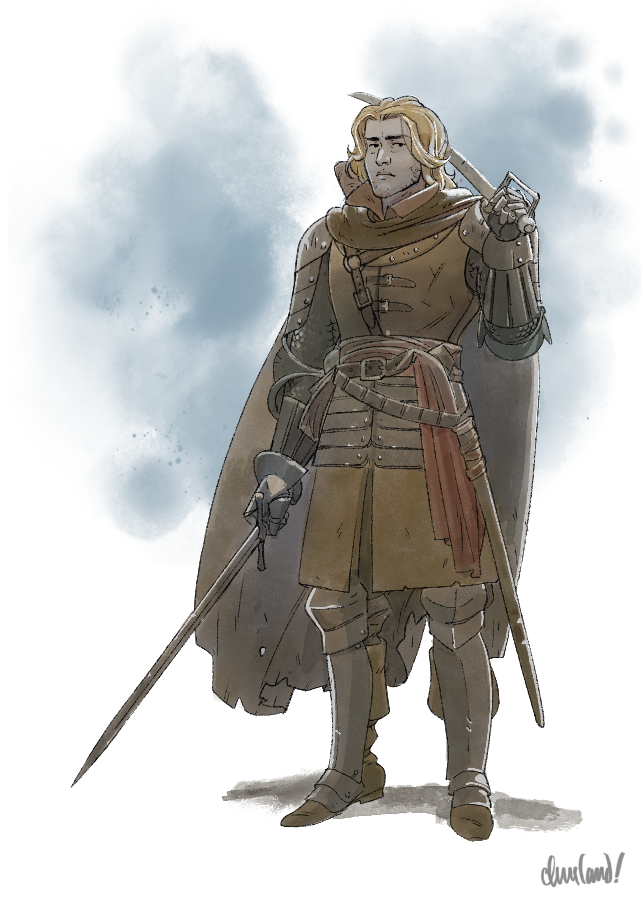
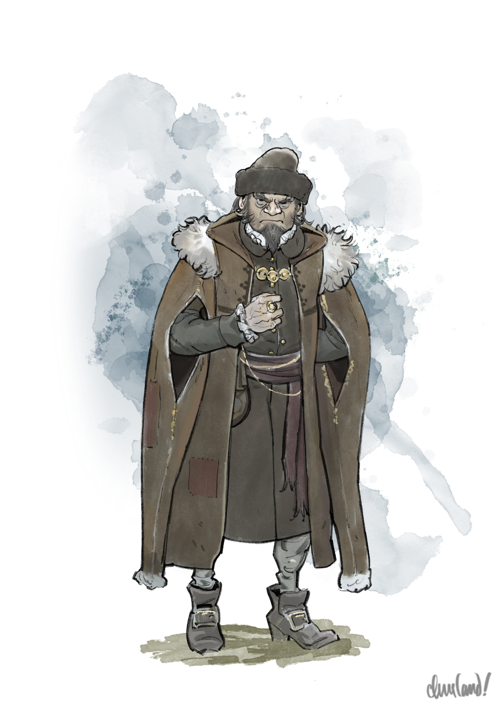
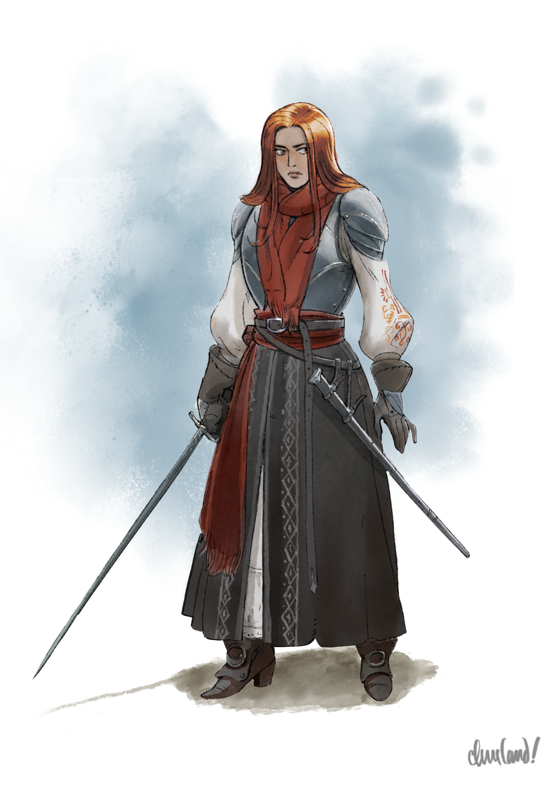
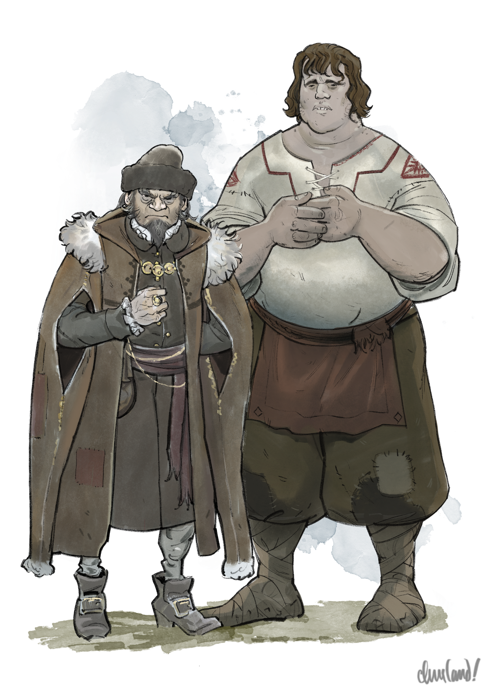
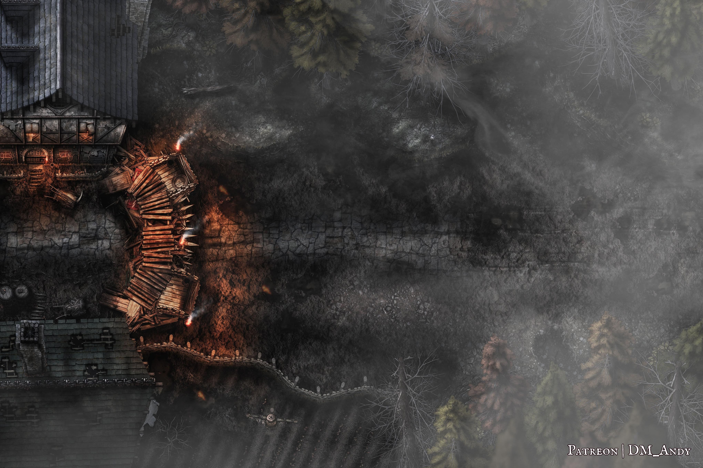
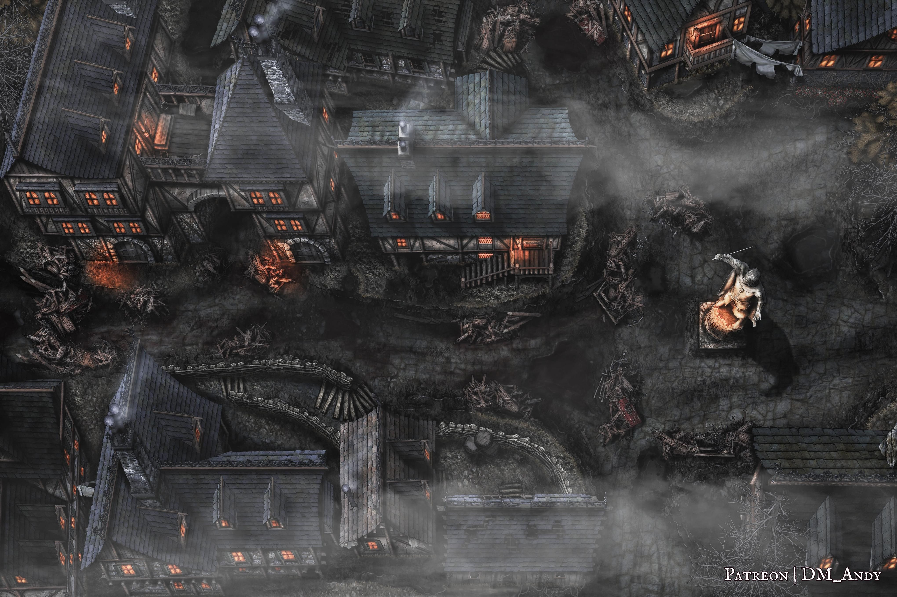
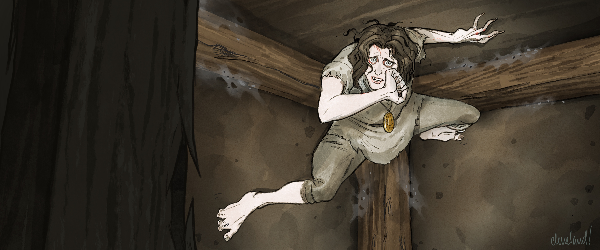

Uma aventura para cinco personagens de 3º nível.
Neste arco, os jogadores viajam até o sombrio vilarejo de Barovia, devastado pela morte e pelo desespero após o retorno de Strahd. Quando os jogadores chegam às barricadas, encontram Ismark, o filho mais velho do burgomestre do vilarejo, recentemente ferido.
Na Taverna Sangue da Videira, os jogadores descobrem que o vilarejo vem sendo atacado pela horda de mortos-vivos de Strahd todas as noites nas últimas seis noites—e que a horda deve retornar ao anoitecer. Em troca de comida, abrigo e informações, Ismark pede que os jogadores peguem em armas ao lado dos barovianos e se preparem para defender as fortificações do vilarejo contra o ataque dos mortos.
Após defenderem com sucesso as barricadas, os jogadores descobrem que Strahd invadiu pessoalmente a mansão do burgomestre, matando o pai de Ismark e mordendo sua irmã, Ireena. Com o burgomestre do vilarejo morto, Strahd retira formalmente a horda do vilarejo, permitindo que Ismark, Ireena e os jogadores recolham os pedaços.
Na manhã seguinte, Ismark pede aos jogadores que ajudem a levar os restos mortais de seu pai até a igreja local para o sepultamento, escoltem Ireena até Vallaki e perguntem à vidente Vistani Madam Eva como Strahd pode ser derrotado. Ao entregar o caixão do Burgomestre à igreja na madrugada seguinte, os jogadores podem conhecer Doru, filho do Padre Donavich, que Strahd transformou em vampiro servo como punição por sua rebelião. Os jogadores então enfrentam uma escolha: destruirão Doru, como pede o Padre Donavich—ou o pouparão?
A chegada dos jogadores ao vilarejo de Barovia foi substancialmente reformulada para criar um forte incidente incitante para a campanha, garantindo que eles tenham um motivo imediato e concreto para buscar a leitura de Tarokka de Madam Eva, uma oportunidade de formar laços com os moradores de Barovia, e interesses pessoais em ver Strahd derrotado.
B1. Old Svalich Road
Esta cena se passa no Capítulo 2: Área A.
A jornada da torre até B2. Portões de Barovia tem três quilômetros de extensão e leva quarenta minutos.
Esta cena se desenrola como descrita em Old Svalich Road (p. 33).
B2. Portões de Barovia
Esta cena se passa no Capítulo 2: Área B.
Esta cena se desenrola como descrita em Gates of Barovia (p. 34).
A jornada dos Portões de Barovia até B3. Svalich Woods tem quatrocentos metros de extensão e leva cinco minutos.
B3. Svalich Woods
Esta cena se passa no Capítulo 2: Área C.
Esta cena começa como descrita em Svalich Woods (p. 34). Contudo, quando os jogadores encontram o cadáver de Dalvan Olensky, ele não está segurando um envelope amassado, e suas roupas parecem ter sido rasgadas por espinhos e sarças, e não por marcas de garras. Ele não aparenta ferimentos visíveis, mas um teste de Sabedoria (Medicina) CD 10 bem-sucedido revela que ele morreu de exaustão.
Em vez do envelope, Dalvan segura agora uma velha bússola de cobre embaçado. Embora ainda esteja perto da borda do vale baroviano, sua agulha treme estranhamente mesmo quando mantida imóvel.
A mão de Dalvan, ainda segurando a bússola, está estendida na direção de uma árvore próxima, que traz treze marcas de contagem entalhadas e uma seta apontando para mais fundo no bosque, ao longo do que parece ser uma trilha bem batida.
Na esteira do ataque de Strahd ao vilarejo de Barovia, um dos sobreviventes—um jovem chamado Dalvan Olensky—foi tomado pelo terror e pelo desespero.
Determinado a encontrar um jeito de escapar de Barovia, Dalvan viajou até o acampamento Vistani em Tser Pool, em busca da renomada vidente Vistani Madam Eva. Lá, Madam Eva leu seu futuro nas cartas de Tarokka e tirou o Cavaleiro—uma carta que previa que ele morreria no vale baroviano.
Em pânico, Dalvan retornou ao vilarejo de Barovia sob o manto da noite, roubou um cavalo e uma bússola, e partiu pela estrada oriental que sai de Barovia. Quando a Old Svalich Road pareceu terminar, Dalvan se embrenhou no bosque, atravessando a névoa e reemergindo no lado oposto da estrada.
Um Dalvan aterrorizado, desesperado e delirante repetiu o ciclo treze vezes, seu cavalo roubado sucumbindo à exaustão na metade do caminho. Não demorou muito para que Dalvan também sucumbisse aos efeitos da névoa baroviana—mas não antes de inscrever seu próprio epitáfio na forma do entalhe na quarta árvore.
Madam Eva lamenta o destino de Dalvan—mas, como avatar da Buscadora, ela é obrigada a ler o futuro quando solicitada, e sabe que nenhum esforço para escapar pode desfazer um futuro que ela já previu.
Como todas as bússolas em Barovia, a bússola de Dalvan se comporta de maneira estranha ao se aproximar das imediações da borda do vale baroviano—como perto de Yester Hill em Arc J - The Stolen Gem ou rumo ao pico do Monte Ghakis em Arc S - A Sword of Sunlight. Como não existe um verdadeiro "norte magnético" além das Névoas que cercam Barovia, a agulha de uma bússola que se aproxima da borda do vale começa a tremer e, por fim, a girar descontroladamente quanto mais perto ela chega. (Esse comportamento estranho cessa quando a bússola é afastada da borda do vale.)
Se os jogadores seguirem a trilha na direção da seta, logo chegam a uma segunda árvore, que traz outras treze marcas de contagem e uma seta que aponta mais adiante na direção da trilha. A beira da trilha aqui traz o cadáver de um cavalo, que está num estado de decomposição semelhante ao de Dalvan.
Se os jogadores continuarem a seguir a trilha na direção das setas, chegam a uma terceira árvore, que traz outras treze marcas de contagem e uma seta que aponta mais adiante na direção da trilha, que visivelmente desaparece numa parede de névoa impenetrável.
A névoa faz parte das Névoas que cercam e aprisionam Barovia. Se os jogadores trouxeram consigo a bússola de Dalvan, a agulha agora gira descontroladamente em círculos.
Se os jogadores seguirem a trilha através da névoa, eles emergem depois de 2d4 minutos numa porção desconhecida das Svalich Woods. Toda vez que os jogadores emergem da parede de névoa ao redor de Barovia, devem fazer um teste de resistência de Constituição CD 5 ou sofrer 1 nível de exaustão, já que a névoa drena sua energia e suga sua força vital. (A CD aumenta em 5 a cada vez que os jogadores atravessam a névoa novamente, e é reiniciada após um descanso longo.)
Ao emergir da névoa, os jogadores podem ver uma quarta árvore, que traz outras treze marcas de contagem e uma seta que aponta mais adiante na direção da trilha. Além disso, a quarta árvore parece trazer um entalhe e tem um objeto projetando-se de seu tronco. Se os jogadores a inspecionarem, leia:
Alguém cravou uma velha adaga no tronco desta árvore antiga e retorcida. Ao lado dela há um entalhe rústico de uma figura montada num cavalo, logo acima de duas frases talhadas grosseiramente:
"O CAVALEIRO CAVALGA."
"A VIDENTE FALOU A VERDADE."
Se os jogadores seguirem a trilha na direção da seta, descobrem que ela cruza a Old Svalich Road antes de retornar ao local do cadáver de Dalvan.
Se os jogadores então deixarem o cadáver de Dalvan e voltarem, descobrem que tanto os restos dele quanto os do cavalo desapareceram.
A tarefa de Dalvan no módulo original—deixar um bilhete de advertência nos portões orientais de Barovia—faz pouco sentido, dado que o Burgomestre Indirovich saberia que aqueles que chegam a Barovia vindos de além das Névoas não podem voltar atrás, mesmo antes de entrarem pelos portões barovianos. Em vez disso, o papel de Dalvan foi revisado para anunciar o insight profético de Madam Eva e comunicar os perigos (e as mecânicas) de entrar nas Névoas.
Dalvan e seu cavalo reaparecerão mais tarde como o cavaleiro esquelético descrito em Skeletal Rider (p. 31) em Arco C - Adentrando o Vale. O cavaleiro reaparecerá novamente em Arco O - Jantar com o Diabo, guiando os jogadores, a mando de Madam Eva, até a árvore de Katarina e seu medalhão há muito perdido, que os jogadores podem usar para permitir que o espírito de Varushka encontre paz em Arco O - Jantar com o Diabo.
B4. Mirante Baroviano
Esta cena se passa no Capítulo 2: Área D.
Os jogadores emergem das Svalich Woods um quilômetro e meio e vinte minutos depois de partirem do cadáver de Dalvan. Quando o fazem, leia:
O bosque sombrio se abre, revelando um vale enevoado e sombrio, pontilhado por densas nuvens de névoa.
Nuvens de trovão rolam pelo céu, lançando um manto cinzento sobre a terra lá embaixo, sem nenhum sol visível na luz fria e cinzenta. Árvores perenes sobem pelas encostas das montanhas que cercam o vale. Ao norte, ergue-se um monte rochoso com tufos de árvores; ao sul, um pico coberto de neve com encostas escarpadas se ergue imponente sobre a terra lá embaixo.
A estrada de terra continua adiante, atravessando gramíneas amareladas e terras de cultivo até alcançar um pequeno e humilde povoado encolhido contra a terra. Ao lado da estrada, um rio corre límpido como um céu de inverno azul através do vale.
Muito acima do vilarejo paira um castelo escuro e retorcido, erguendo-se sozinho no topo de um pilar de pedra nua. Por um instante, um distante raio de relâmpago crepita, iluminando a torre imponente em luzes e sombras ásperas—e então um denso banco de névoa rola sobre a cena, ocultando vilarejo e castelo da vista.
A jornada daqui até os arredores do vilarejo tem três quilômetros de extensão e leva quarenta minutos.
B5. O Vilarejo de Barovia
O vilarejo de Barovia foi fortemente fortificado para se defender do cerco noturno de Strahd. Barricadas de troncos, tábuas e móveis quebrados foram erguidas em todas as entradas principais do povoado, com obstruções adicionais levantadas em cada beco ou brecha entre as casas dos moradores. Uma vala foi cavada ao redor do vilarejo e plantada com estacas afiadas, e arqueiros patrulham os telhados a todas as horas do dia e da noite.
B5a. A Barricada
Esta cena se desenrola em grande parte como descrita em Approaching the Village (p. 41). Contudo, modifique a descrição da seguinte forma:
Conforme a manhã avança, o céu encoberto clareando para um cinza opaco e sombrio, os arredores do vilarejo entram em foco mais nítido. Uma larga vala de terra cerca o povoado, com um metro e meio de largura e a mesma profundidade, com centenas de estacas de madeira afiadas erguendo-se como dentes irregulares desde o solo lá dentro. Mais adiante, ao lado de uma alta pilha de madeira carbonizada, a estrada continua sobre uma ponte de madeira improvisada, o chão enlameado além dela cedendo lugar a paralelepípedos escorregadios e molhados.
Barricadas de madeira erguem-se desajeitadamente ao longo das ruas. As estruturas ao redor delas trazem marcas de queimadura e talhos, e vários edifícios mostram telhados ou paredes parcialmente desabados, deixando a névoa fria e insidiosa se infiltrar silenciosamente para dentro.
As altas formas das casas do vilarejo se erguem acima, surgindo da densa névoa que se agarra à terra. Figuras empunhando bestas patrulham os velhos telhados acima, enquanto meia dúzia de moradores de aparência assombrada fazem reparos numa barricada de nove metros de comprimento que bloqueia a rua principal. Um homem alto e de ombros largos, cabelo louro na altura dos ombros e queixo talhado, lidera o trabalho, usando uma velha espada longa presa ao quadril e um conjunto de armadura de placas divididas sobre um casaco de gola alta. Um corvo de asas com pontas azuis empoleira-se num dos telhados próximos, observando os acontecimentos abaixo com evidente interesse.

"Ismark Kolyanovich" by Caleb Cleveland. Support him on Patreon! O homem é Ismark Kolyanovich, que é em grande parte como descrito em E2. Blood of the Vine Tavern (p. 43). O corvo é Muriel, uma corvo-licantropo disfarçada e membro dos Guardiões da Pena. Duas batedoras empunhando bestas leves (+4 para acertar, alcance 24/96 m, um alvo, Acerto: 6 (1d8 + 2) de dano perfurante) chamadas Kereza e Korga vigiam os telhados por perto, enquanto seis plebeus barovianos fazem reparos na barricada.Informações de Interpretação Ressonância. Ismark deve inspirar lisonja com seu interesse genuíno e sua empatia pelos jogadores, compaixão por sua culpa e desespero, ternura por sua ânsia de sair da sombra do ancestral, e gratidão por sua simpatia e ajuda.
Emoções. Ismark costuma sentir preocupação, culpa, cordialidade, melancolia, obstinação, esperança, desespero e gratidão.
Motivações. Ismark quer manter seu vilarejo e Ireena em segurança, manter viva a memória do pai e um dia estar à altura do legado de seu ancestral.
Inspirações. Ao interpretar Ismark, canalize Jon Snow (Game of Thrones), Faramir (O Senhor dos Anéis) e Trevor Belmont (Castlevania).
Informações do Personagem Persona. Para o mundo, Ismark é um líder corajoso, confiável e compassivo. Para aqueles em quem confia, Ismark é um guerreiro cheio de dúvidas, lutando desesperadamente para manter seus entes queridos em segurança. No fundo, Ismark teme jamais estar à altura dos feitos de seu ancestral—e teme já ter falhado de forma irreparável.
Moral. Em um combate, Ismark primeiro buscaria mediar o conflito entre as partes, mas desembainharia a espada de bom grado—e até lutaria até a morte—se acreditasse estar lutando por algo ou alguém que valesse a pena proteger.
Relacionamentos. Ismark é o irmão adotivo de Ireena Kolyana, e bisneto de Ismark, o Grande.
Conforme os jogadores se aproximam, Kereza os desafia. Leia:
Uma mulher nos telhados grita para vocês: "Alto! Declarem-se—são mortos ou vivos?" Seu companheiro, um homem de aspecto sombrio vestido em armadura de couro, contrai-se em direção à besta em seu quadril.
Kereza desconfia dos jogadores, acreditando que sejam vampiros, zumbis ou carniçais disfarçados. Independentemente da resposta dos jogadores, Ismark intervém, repreendendo gentilmente Kereza por sua paranoia e tranquilizando os outros barovianos com bom humor de que os jogadores estão claramente vivos, "assim como nós".
Ismark então convida gentilmente os jogadores para além da barricada por uma seção removível e os recebe. Ele confessa, porém, que teme que tenham chegado num momento ruim, compartilhando que o vilarejo vem sendo sitiado por uma horda de mortos-vivos nas últimas noites.
Depois de confirmar que a barricada está quase reparada, Ismark convida os jogadores a se juntarem a ele na Taverna Sangue da Videira, no centro do vilarejo, onde podem conversar mais e compartilhar bebidas. ("Temos pelo menos três horas antes do anoitecer", diz ele, semicerrando os olhos para o céu cinzento acima. "Deve nos dar tempo suficiente antes que os mortos retornem.")
Se os jogadores concordarem, Muriel os segue até a praça do vilarejo, permanecendo no alto e observando com interesse aguçado.
Ismark não sabe que o corvo de asas azuis é uma corvo-licantropo, nem sabe se alguém lhe deu um nome. Ele acredita, porém, que a presença do corvo é um bom presságio, e pode compartilhar a superstição sobre corvos descrita em Beliefs and Superstitions (p. 28). (Essa superstição é compartilhada por todos os barovianos, não apenas pelos Vistani.)
Esta cena foi escrita para transmitir imediatamente a cautela dos moradores, estabelecer Ismark como um aliado simpático, e apresentar a corvo-licantropo Muriel Vinshaw e os corvos de Barovia, prenunciando assim os Guardiões da Pena.
Muriel reaparecerá mais tarde em Arco C - Adentrando o Vale, fugindo de uma strix maior após espionar o encontro de Strahd com Madam Eva, e acompanhará os jogadores até a cidade de Vallaki pelo restante do Arco C. Muriel também aparecerá em sua forma e persona humanas em Arco J - A Gema Roubada para acompanhar os jogadores em sua jornada até a vinícola Vinícola Feiticeiro dos Vinhos, e revelará sua verdadeira natureza licantrópica em Yester Hill.
B5b. A Praça do Vilarejo
Enquanto os jogadores e Ismark atravessam as ruas do vilarejo, leia:
Moradores exaustos, de olhos assombrados, observam vocês passarem, suas roupas manchadas de escuro com lama ou sangue e suas mãos nunca longe de um arco, machado ou forcado. Ismark cumprimenta cada um pelo nome. Vários se aproximam dele, falando baixinho em tons sussurrados antes de fugir de novo para as casas gemedoras ou becos sombrios ao redor de vocês.
Ismark guia vocês através de uma segunda barricada, maior, guarnecida por moradores de rosto carrancudo empunhando porretes e lanças. Além dela ergue-se uma velha estátua de pedra lascada no centro de uma pequena praça do vilarejo, retratando um homem usando armadura de couro e segurando uma espada. Mais de uma dezena de tendas e fogueiras improvisadas foram montadas ao redor dela, abrigando um grupo de aparência exausta de moradores jovens, idosos e enfermos.
Acrescente a descrição do exterior da Taverna Sangue da Videira, dada em E2. Blood of the Vine Tavern (p. 43).
As tendas abrigam os idosos, doentes e crianças do vilarejo, que foram reunidos aqui como uma fortificação de último recurso. A estátua traz uma placa desgastada pelo tempo em sua base, que diz: "ISMARK ANTONOVICH, O GRANDE. Burgomestre de Barovia. Flagelo dos Vampiros. 618—662 D.B." ("D.B." significa "Depois de Barovia".)  "Ismark the Great" by Caleb Cleveland. Support him on Patreon! Se os jogadores perguntarem sobre a estátua, Ismark pode compartilhar as seguintes informações:
"Ismark the Great" by Caleb Cleveland. Support him on Patreon! Se os jogadores perguntarem sobre a estátua, Ismark pode compartilhar as seguintes informações:
- Em vida, Ismark Antonovich, também conhecido como Ismark, o Grande, foi um guerreiro poderoso e o burgomestre do vilarejo de Barovia. Em seu auge, ele lutou contra dezenas de vampiros e outros mortos-vivos deixados para trás quando Strahd desapareceu de vista pública. Ele acabou morrendo ao defender um grupo de armadilheiros de um ataque de lobo atroz, aos 44 anos de idade, e a estátua do lado de fora foi erguida em sua homenagem.
- Ismark Antonovich era bisavô de Ismark Kolyanovich. O pai de Ismark, Kolyan, deu-lhe esse nome na esperança de que um dia ele se tornasse um grande guerreiro.
B5c. Taverna Sangue da Videira
Esta área é em grande parte como descrita em E2. Blood of the Vine Tavern (p. 43). Contudo, em vez de Alenka, Mirabel e Sorvia—as três Vistani encontradas aqui no módulo original—Arik é o único dono e proprietário da taverna. (Alenka, Mirabel e Sorvia não estão presentes na taverna, tendo fugido do vilarejo para Tser Pool no dia anterior ao início do cerco.)
Depois de entrar na taverna, Ismark paga a Arik para lhes trazer bebidas. Enquanto os jogadores se sentam com ele, Ismark se desculpa pelo estado do vilarejo e pergunta como eles vieram a chegar ao vale. "Devem ter mil perguntas", diz ele com simpatia. "Ficaria feliz em responder ao máximo que puder."
Ismark pode compartilhar as seguintes informações:
- Os jogadores entraram na terra de Barovia, um reino cercado por névoa mortal e governado por Strahd von Zarovich, um poderoso vampiro que dormia no Castelo Ravenloft até recentemente.
- Forasteiros são ocasionalmente trazidos a Barovia pelas névoas. (Ismark não tem conhecimento da Casa da Morte, mas vagamente se lembra de histórias sobre formas heterodoxas pelas quais viajantes chegaram ao vale.) Não há como escapar de Barovia depois que um forasteiro entra nela.
- Pouco mais de três meses atrás, um homem chamado Doru, filho do sacerdote do vilarejo, liderou uma rebelião contra o castelo, esperando libertar o vale de sua prisão nas névoas. A revolta fracassou, despertando Strahd de sua letargia e incitando o vampiro a jurar vingança contra o vilarejo abaixo.
- Várias dezenas de barovianos fugiram para a cidade de Vallaki, quase um dia de viagem a oeste. O restante ficou no vilarejo, determinado a defender seus lares e aqueles que não conseguiram fazer a jornada.
- Seis noites atrás, as forças mortas-vivas de Strahd começaram a atacar a cidade. Todas as noites, os barovianos repeliram múltiplas ondas de mortos—e todas as noites, a horda chega cada vez mais perto de romper as defesas do vilarejo.
- Muitos barovianos temem que o vilarejo esteja condenado. Os mortos-vivos infestaram os bosques ao norte, oeste e sul, bloqueando a Old Svalich Road logo após o Rio Ivlis. Com as Névoas bloqueando a passagem a leste, o vilarejo foi efetivamente isolado do mundo, deixado para sobreviver por conta própria—ou perecer.
Ismark também pode compartilhar a história recente do vilarejo, bem como a maior parte das informações em Roleplaying Ismark (p. 43) e Barovian Lore (p. 26). Contudo, Ismark não menciona um "mago louco", e não sugere que os Vistani sirvam a Strahd. (Note que o pai de Ismark, o Burgomestre Kolyan Indirovich, ainda está vivo—embora ferido—na mansão do burgomestre, e a irmã de Ismark, Ireena Kolyana, ainda não foi mordida por Strahd.)
A Fúria de Bildrath
Pouco depois de Ismark começar a responder às perguntas dos jogadores, leia:
Algo bate com força contra uma mesa próxima—e o som atrai a atenção de vocês para um homem sentado não muito longe, seu punho cerrado tremendo contra a superfície de madeira de sua mesa. Ele é atarracado, com cabelo grisalho ralo e oleoso, e um casaco remendado e bastante gasto. Uma carranca marca seu rosto enquanto ele volta seus olhos escuros para o grupo de vocês. "É tolice depositar sua fé em Ismark, o Menor," ele rosna, os olhos demorando-se em cada um de vocês. "É melhor buscar companhia melhor, ou vocês acabarão debaixo da terra como os últimos tolos que confiaram nele."

"Bildrath" by Caleb Cleveland. Support him on Patreon!O homem é Bildrath Cantemir, dono da Bildrath's Mercantile (p. 43). Se algum dos jogadores parecer interessado em conversar mais com ele, ele os convida a se sentar em sua mesa para "ouvir a verdadeira história desta terra sangrenta". "O vinho é uma porcaria", ele resmunga, empurrando uma jarra de vinho pela mesa, "mas o resto também é."
Se perguntado sobre a afirmação de Bildrath a respeito dos "últimos tolos que confiaram nele", Ismark estremece. "Ele tem razão em me odiar", diz baixinho. "Pedi aos outros moradores que ficassem e defendessem nossos lares. Fui arrogante e tolo—não apreciei o quão poderosos eram o Diabo e suas criaturas." Ele fecha os olhos. "Agora dezenas de meus amigos e vizinhos se foram—e eu ainda estou aqui."
Caso um ou mais jogadores se juntem a ele, Bildrath pode compartilhar as seguintes informações:
- Pouco mais de três meses atrás, um bando de aspirantes a "revolucionários" marchou até o Castelo Ravenloft para "matar o vampiro". Doru, filho de Padre Donavich, o sacerdote do vilarejo, "encheu suas cabeças de contos de fadas" sobre banir as Névoas e trazer o Sol de volta a Barovia.
- Nenhum dos revolucionários jamais voltou. Alguns dias depois, um elfo de pele crepuscular veio ao vilarejo e anunciou que o vilarejo tinha noventa dias para fazer as pazes com os deuses antes que o senhor do Castelo Ravenloft—agora desperto após cem anos de letargia—exigisse penitência por sua desobediência.
- Alguns moradores partiram. Muitos outros queriam partir. Contudo, Ismark discursou de forma retumbante na praça do vilarejo diante da estátua de Ismark, o Grande, prometendo aos moradores que aqueles que permanecessem defenderiam seus lares. "A audácia do bastardo", zomba Bildrath. "Ficando na frente da estátua do bisavô como se valesse um décimo dele."
- Bildrath queria partir—mas sua irmã, Marta, e o marido dela, Dragomir, escolheram ficar com o filho deles, Parriwimple, inspirados pelas palavras de Ismark. Sem vontade de deixar sua família, Bildrath também ficou. "Acharam que lutariam para defender o que era deles", ele engasga, piscando para conter as lágrimas. "Idiotas deveriam ter fugido, e nunca olhado para trás."
- Noventa dias depois de o elfo entregar sua proclamação, os mortos-vivos vieram, invadindo em hordas de dezenas vindas do Svalich Wood. Os moradores revidaram, defendendo as ruas com barricadas, espadas e flechas. "Mas os mortos continuavam vindo", Bildrath grasna. "E Marta—" Ele silencia. (Bildrath perdeu Marta e Dragomir nos ataques, e culpa Ismark por sua falha em protegê-los, o que deixou Parriwimple—sobrinho de Bildrath—órfão.)
Quando recupera a compostura, Bildrath adverte os jogadores de que o vilarejo está condenado, e provavelmente toda a Barovia com ele. "Não há sol para trazer de volta", ele cospe. "Nenhuma fuga das névoas. Isto é o Inferno, agora e para toda a eternidade. Quanto mais cedo vocês aceitarem isso, melhor para vocês."
As Notícias de Mary
Enquanto as conversas dos jogadores com Ismark e Bildrath chegam ao fim, leia:
A porta da taverna se abre mais uma vez, e uma mulher entra, vestida num manto surrado e esfarrapado. Seu cabelo, preso em duas alças que caem ao redor do pescoço, está desgrenhado e emaranhado, e seus olhos arregalados percorrem a sala com energia amedrontada.
Seu olhar recai sobre Ismark, e ela dá um passo trêmulo à frente. Conforme seus traços chegam à luz, vocês veem que seu rosto está pálido, seus olhos manchados, com lágrimas secas marcando a carne de suas bochechas. Sua voz é um sussurro rouco e angustiado enquanto ela diz: "Mestre Kolyanovich—peço desculpas por interromper o senhor e seus convidados. Mas não vejo Gertruda desde ontem à noite, e Nori não está no estábulo. Acho que Gertruda foi para Vallaki—sozinha."
A taverna imediatamente cai em silêncio, e os olhos de Ismark se franzem de preocupação. Ele oferece suas condolências a Mary, e promete que organizará uma equipe de busca para procurá-la. "Se ela não chegou a Vallaki, nós a encontraremos—e a traremos de volta em segurança."
Se os jogadores se oferecerem para ajudar a equipe de busca a localizar Gertruda, Ismark agradece sua generosidade, mas garante que os caçadores e armadilheiros que pretende organizar conhecem as estradas e bosques locais muito melhor do que eles, e devem conseguir contornar as bordas da horda de mortos-vivos sem arriscar muito problema. "Quanto mais gente os acompanhar, porém", diz ele, se desculpando, "mais provável que a horda note seus movimentos e ataque."
"Se quiserem ajudar, no entanto", ele acrescenta, "podemos usar toda ajuda possível para organizar a defesa desta noite." Ismark então faz o pedido dado em O Pedido de Ismark.
Enquanto isso, Bildrath rosna e cospe, "Mais promessas vazias, Kolyanovich?" Ele se volta para os jogadores, com olhar sombrio. "Vocês já viram algo tão cruel?"
Depois que os jogadores tiverem tido a chance de falar, Bildrath insiste, "Ninguém sobrevive sozinho naquelas estradas. A garota já era, Mary. Sinto muito." Mary então desaba em lágrimas.
A menos que os jogadores intervenham, a sequência a seguir se desenrola:
- Ismark se levanta, empurrando sua cadeira para longe da mesa. "Já chega, Mestre Cantemir", ele rosna.
- "Vai me colocar no meu lugar, Mestre Kolyanovich?" zomba Bildrath. "Pare de mentir para a mulher. A garota está praticamente morta. Logo todos nós vamos nos juntar a ela."
- "Sempre há uma chance", diz Ismark com fervor. Ele engole em seco, e olha de volta para Mary, depois para os jogadores. "Você pode ter desistido do nosso povo, Bildrath, mas eu não."
- Bildrath fita Ismark, as mãos se cerrando em punhos. Depois de um longo momento suspenso, ele cospe no chão e sai da taverna sem se dirigir a Ismark ou aos jogadores. A sala principal permanece mortalmente silenciosa, o silêncio quebrado apenas pelos soluços sufocados de Mary.
Se os jogadores perguntarem, Mary pode compartilhar as seguintes informações:
- Gertruda é sua filha de vinte e um anos. Desde que Doru, seu noivo, marchou até o Castelo Ravenloft e não retornou, Gertruda ficou obcecada com a cidade de Vallaki, acreditando que, se apenas conseguisse viajar até Vallaki e falar com o Burgomestre, poderia convencê-lo a trazer ajuda.
- Mary repetidamente proibiu Gertruda de viajar para longe do vilarejo. Com o início do cerco, porém, Gertruda se convenceu teimosamente de que a ajuda de Vallaki é a única forma de acabar com o sofrimento do vilarejo.
- Ontem à noite, Mary e Gertruda tiveram uma discussão tumultuada que terminou com as duas em maus termos. Esta manhã, Mary acordou e descobriu que o velho cavalo delas, Nori, sumira do estábulo—e Gertruda não estava em lugar nenhum. (Mary acredita que Gertruda levou Nori num esforço para escapar da horda de zumbis.)
Alguns momentos depois de Bildrath ter partido, se os jogadores ainda não o fizeram, Ismark se volta para consolar Mary. "Eu prometo a você", diz ele, a voz falhando, "que farei tudo o que puder para garantir que Gertruda seja trazida de volta em segurança."
Uma vez acalmada, Mary enxuga os olhos, agradece a Ismark (e aos jogadores, se a consolaram), e deixa a taverna.
Gertruda, desesperada com o estado do vilarejo e determinada a mostrar a mesma coragem que Doru, partiu de Barovia rumo a Vallaki na manhã da chegada dos jogadores, buscando ajuda do Burgomestre. Gertruda, porém, nunca chegou a Vallaki. Enquanto atravessava as Svalich Woods, a carruagem negra de Strahd apareceu diante dela—e o próprio Diabo saiu de dentro dela. Aterrorizada, mas sem querer demonstrar medo, Gertruda educadamente exigiu que Strahd permitisse que suprimentos fossem entregues a Barovia para que os moradores pudessem se reconstruir. Strahd pareceu se divertir com a coragem de Gertruda e a convidou ao Castelo Ravenloft para "discutir reparações mais a fundo". Percebendo que era um convite que não podia recusar, Gertruda relutantemente concordou em acompanhá-lo. Desde então, Gertruda permaneceu como uma "convidada de honra" no castelo, embora tenha ficado claro que Strahd não tem intenção de deixá-la sair de seus aposentos—muito menos da fortaleza em si.
O Pedido de Ismark
Depois que Mary parte, Ismark pede que os jogadores ajudem a defender a barricada oriental do vilarejo naquela noite. "Gostem ou não, estamos todos juntos nisso", ele diz com pesar. "Quanto mais gente, melhor. Não sei se posso prometer moedas, mas posso prometer que ajudará todos nós a sobreviver a esta noite—vocês inclusive." Em troca da ajuda dos jogadores, Ismark tem prazer em lhes oferecer teto e comida na casa de sua família. (A Taverna Sangue da Videira não tem quartos para alugar.)
Se os jogadores concordarem em ajudar na defesa do vilarejo, Ismark fica profundamente grato. Ele pede que eles primeiro recuperem uma caixa de "garrafas incendiárias" com sua irmã, Ireena, que está supervisionando a defesa do perímetro sul do vilarejo a partir da casa deles, E4. Burgomaster's Mansion (p. 44). (Ismark, que precisa voltar às barricadas ocidentais para se preparar para o retorno dos mortos, não pode se dar ao luxo de fazer isso ele mesmo.) Se perguntado, Ismark pode explicar que uma "garrafa incendiária" é uma garrafa de vinho destilado com um pavio de pano na boca, feita para ser acesa e arremessada contra mortos-vivos que se aproximam.
Assim que os jogadores tiverem recuperado a caixa de garrafas incendiárias e tido a oportunidade de descansar na mansão, Ismark lhes diz que devem levar as garrafas incendiárias até a barricada oriental—o local por onde entraram no vilarejo pela primeira vez—onde ficarão de plantão durante toda a noite.
B5d. A Mansão do Burgomestre
Esta área é em grande parte como descrita em Burgomaster's Mansion (p. 44). Contudo, o Burgomestre Kolyan Indirovich ainda não foi morto, e Ireena ainda não foi mordida.
A Multidão Enfurecida
Quando os jogadores chegam, encontram uma multidão de dez plebeus barovianos reunida do lado de fora da mansão. Acrescente o seguinte ao final da descrição desta área:
Uma pequena multidão de moradores se reuniu do lado de fora da mansão, empunhando forcados, vassouras e machados. Uma mulher simples e de aparência cansada permanece à frente deles, o cabelo castanho ondulado preso para trás com uma bandana branca amarrotada.
"Entregue-a, Kolyan!" ela grita. "Suas defesas mantiveram o Diabo afastado, mas não puseram fim ao seu flagelo. É hora de tomarmos as coisas em nossas próprias mãos."
Um homem mais velho vestido em roupas finas, seu cabelo grisalho ralo recuando pelo couro cabeludo, apoia-se pesadamente numa bengala na porta. Bandagens grossas e ensanguentadas envolvem seu estômago, testa e joelho esquerdo. Ao lado dele está uma jovem mulher de cabelo longo e ruivo e um peitoral de aço sobre uma túnica cinza de mangas compridas, o rosto pálido e tenso. Um florete pende de uma bainha em seu quadril, a mão direita pairando sobre o punho reluzente.
"Vão para casa, Alenka", o homem brada. "O resto de vocês também. Enquanto eu for burgomestre, não permitirei essa loucura."
A mulher de cabelo castanho é Alenka Konstantinova, uma plebeia baroviana de meia-idade. O homem mais velho é o Burgomestre Kolyan Indirovich, um veterano com quatro níveis de exaustão. A jovem de cabelo ruivo é Ireena Kolyana, que é em grande parte como descrita em Roleplaying Ireena (p. 45).

"Ireena Kolyana" by Caleb Cleveland. Support him on Patreon!Informações de Interpretação Ressonância. Ireena deve inspirar lisonja com seu interesse genuíno pelos objetivos e interesses dos jogadores, compaixão por seu sentimento de culpa e seu medo de Strahd, ternura por sua determinação em seguir em frente, e gratidão por seus esforços em ajudar os jogadores a triunfar.
Emoções. Ireena costuma sentir curiosidade, reflexão, melancolia, culpa, teimosia, alegria, determinação, obstinação e ansiedade.
Motivações. Ireena quer manter seus conterrâneos barovianos e Ismark em segurança, honrar a memória dos pais, aprender novas histórias e um dia explorar terras distantes.
Inspirações. Ao interpretar Ireena, canalize Bela (A Bela e a Fera), Elizabeth Swann (Piratas do Caribe), Éowyn (O Senhor dos Anéis), Hermione Granger (Harry Potter) e Katniss Everdeen (Jogos Vorazes).
Informações do Personagem Persona. Para o mundo, Ireena é uma jovem nobre compassiva, curiosa, porém teimosa. Para aqueles em quem confia, Ireena é uma jovem ansiosa, porém determinada, que sonha com liberdade e aventura. No fundo, Ireena se pergunta se entregar-se a Strahd não seria a melhor maneira de proteger aqueles que ama.
Moral. Em um combate, Ireena sempre recorrerá às palavras antes da espada. Se for necessário para se defender, porém, sacará seu florete—com relutância, se estiver protegendo a si mesma, e com orgulho, se estiver protegendo outra pessoa.
Relacionamentos. Ireena é a irmã adotiva (ciente) de Ismark Kolyanovich, a irmã (inconsciente) de Izek Strazni, e a segunda reencarnação (inconsciente) de Tatyana Federovna.
Informações de Interpretação Ressonância. Kolyan deve inspirar conforto com sua calidez e suas garantias, ternura e compaixão por sua teimosia diante de sua incapacidade, e lisonja com seu interesse genuíno pela história e pelas habilidades dos jogadores.
Emoções. Kolyan costuma sentir curiosidade, reflexão, entusiasmo, obstinação, bom humor e severidade.
Motivações. Kolyan quer manter seu povo e seus filhos em segurança.
Inspirações. Ao interpretar Kolyan, canalize Jean-Luc Picard (Star Trek), Greg Universo (Steven Universe) e Atticus Finch (O Sol é Para Todos).
Informações do Personagem Persona. Para o mundo, Kolyan é um líder firme, obstinado, porém compassivo. Para sua família, Kolyan é um pai apoiador e alegre, inteiramente dedicado aos filhos.
Moral. Em um combate, Kolyan tentaria negociar a paz—mas manteria uma mão sobre a lâmina, se necessário para se defender ou defender seus vizinhos.
Relacionamentos. Kolyan é o burgomestre do vilarejo de Barovia, o pai biológico de Ismark Kolyanovich, o pai adotivo de Ireena Kolyana e neto de Ismark, o Grande.
Alenka é irmã de Anton Konstantinovich, um homem baroviano casado com Dezdrelda Konstaninova. Há duas noites, Anton e Dezdrelda desapareceram misteriosamente no meio da noite durante o cerco; seus corpos nunca foram encontrados. A perda os levou Alenka ao luto e à paranoia, e lhe deu uma necessidade desesperada de buscar um fim para o cerco por qualquer meio possível.
Sem que Alenka saiba, Anton e Dezdrelda são prisioneiros de Volenta Popofsky, uma das noivas vampíricas de Strahd, no Castelo Ravenloft. Os jogadores mais tarde encontrarão Anton como um criado mascarado em Arco O - Jantar com o Diabo.
Levada ao desespero pelos ataques de Strahd ao vilarejo, Alenka e a multidão acreditam que um sacrifício ou oferenda é necessário para apaziguar o vampiro e acalmar sua fúria. A seguinte conversa se desenrola se os jogadores não intervierem:
- Alenka informa friamente a Kolyan que um sacrifício ao vampiro não é loucura, mas "bom senso". "Lendas dizem que o Diabo Strahd gosta de caçar mulheres ruivas", ela diz a ele. "Se o sangue dela puder conquistar seu favor, como podemos fazer diferente?"
- Kolyan responde que Alenka é uma "tola" se acredita que entregar Ireena—ou qualquer outra pessoa—vai apaziguar o Diabo do Castelo Ravenloft. "Você está se agarrando a respostas num mundo que não tem nenhuma", ele troveja. "E nós somos barovianos. Não viramos as costas para os nossos."
- Alenka retruca que Ireena não é uma verdadeira baroviana—afinal, Kolyan a encontrou vagando pelos bosques perto do Pedra-Pilar de Ravenloft quando era criança. (Ireena e Kolyan já sabem disso, e não mostram surpresa com essa afirmação.) "Ela não é uma de nós", Alenka diz asperamente, "e se você vai escolhê-la em vez de nós, você também não é."
- Dois dos companheiros de Alenka se aproximam da mansão, empunhando suas armas. Kolyan arqueja, "Como você ousa", dá um passo à frente e quase desaba por causa de seus ferimentos. Ireena o ampara antes que caia e ordena à multidão que não "toque um dedo em seu pai."
Se os jogadores ainda estiverem presentes e não intervieram, Ireena implora por sua ajuda enquanto a multidão de Alenka avança.
Se os jogadores intervierem, Alenka, Kolyan e Ireena os recebem com estranheza e surpresa, embora Alenka desconfie que possam ser espiões do "Diabo Strahd". (Se o nome de Ismark for mencionado, Ireena e Kolyan se tranquilizam, embora Alenka cuspa no chão e amaldiçoe baixinho "Ismark, o Menor" entre os dentes.)
Os jogadores podem dispersar a multidão fazendo um argumento razoável e passando num teste de Carisma (Persuasão) CD 10, feito com vantagem se os jogadores perguntarem sobre os parentes desaparecidos de Alenka e demonstrarem simpatia. Os jogadores também podem dispersar a multidão empunhando suas armas ou magias e passando num teste de Carisma (Intimidação) CD 10, feito com vantagem se mencionarem suas batalhas recentes na Casa da Morte.
Se os jogadores parecerem prontos para atacar a multidão sem provocação, Kolyan implora que evitem violência. "Estão confusos", diz ele com voz rouca, "mas ainda assim são barovianos."
Se os jogadores falharem em dispersar a multidão, mas se recusarem a permitir que Ireena seja levada, Alenka os manda recuar. Se recusarem, ela ordena que a multidão os deixe inconscientes antes de levar Ireena.
Se o combate estourar, Ireena se junta aos jogadores para defender a mansão enquanto Kolyan implora que os combatentes evitem matar alguém. Se dois dos barovianos forem deixados inconscientes, ou se um for morto, o restante foge.
Mortes gratuitas entre os plebeus barovianos alienarão os moradores e os membros da família de Ismark. Jogadores que desejem evitar matar os barovianos podem incapacitar seus oponentes conforme descrito em Knocking a Creature Out (Player's Handbook, p. 198). Se os jogadores optarem por não fazer isso, permita que membros inconscientes da multidão façam testes de resistência contra morte conforme descrito em Monsters and Death (Player's Handbook, p. 198).
Se os jogadores dispersarem a multidão com sucesso, Kolyan e Ireena os convidam para dentro da mansão com gratidão.
Esta cena foi adicionada para comunicar as origens de Ireena aos jogadores, prenunciar o interesse de Strahd nela, oferecer uma questão dramática enquanto os jogadores visitam a mansão, e tornar Ireena e Kolyan queridos aos jogadores antes da chegada de Strahd durante o cerco naquela mesma noite.
Dentro da Mansão
Esta área é em grande parte como descrita em E4. Burgomaster's Mansion (p. 44). Contudo, remova a última frase da descrição desta área (referente ao cadáver de Kolyan).
Se os jogadores ajudaram a dispersar a multidão, Kolyan e Ireena os recebem calorosamente, especialmente se os jogadores mencionarem o nome de Ismark. Independentemente de os jogadores mencionarem que Ismark lhes concedeu teto e comida na mansão, Kolyan os convida a ficar para o almoço em gratidão por sua ajuda ao lidar com Alenka.
Almoço com o Burgomestre
O almoço, já cozinhando numa panela sobre a lareira da cozinha, é um ensopado de nabos e carne de coelho. Ireena se desculpa pela refeição escassa, mas os jogadores podem ver claramente que a despensa da família está quase vazia.
Durante a refeição, Kolyan e Ireena perguntam aos jogadores sobre seus interesses e vidas além de Barovia. Ireena, especialmente, é fascinada por histórias do mundo além das névoas.
Se os jogadores estiverem procurando comprar suprimentos adicionais, Ireena lhes oferece direções até a Bildrath's Mercantile, mas os avisa para não mencionarem o nome de Ismark. Se os jogadores perguntarem por que Ismark é chamado de "o Menor", Ireena e Kolyan estremecem, e podem compartilhar as seguintes informações:
- Quando o servo elfo do crepúsculo de Strahd—um homem de aparência cruel chamado Rahadin—entregou seu aviso três meses atrás, muitos barovianos estavam prontos para fugir do vilarejo rumo a Vallaki.
- Ismark, porém, discursou de forma retumbante e inspiradora, invocando a memória de Lugdana e de Ismark, o Grande, para incentivá-los a ficar e lutar por seus lares. A maioria assim o fez.
- Quando o cerco de Strahd começou, muitos que perderam casas ou entes queridos culparam Ismark, que sentiram tê-los desencaminhado com suas tolas fantasias de heroísmo e valentia. Agora o chamam de "Ismark, o Menor" em zombaria de sua ascendência.
- Ninguém se sente mais culpado ou envergonhado do que o próprio Ismark, que carregou sobre seus próprios ombros o peso de cada morte ocorrida no cerco.
Se os jogadores perguntarem sobre a rebelião de Doru, Ireena pode compartilhar as seguintes informações:
- Doru era amigo deles, e filho do sacerdote do vilarejo, Padre Donavich. Ele era um jovem brilhante e alegre, com uma disposição radiante e zelo por tudo o que fazia.
- Pouco mais de três meses atrás, sem aviso, Doru anunciou uma cruzada contra o Castelo Ravenloft, que ele proclamou que libertaria Barovia das névoas e traria a luz do sol de volta ao vale. Mais de duas dezenas de jovens barovianos o acompanharam, assim como um erudito de terras distantes chamado Alanik Ray, que estivera hospedado como convidado na casa de Ismark e Ireena nas semanas anteriores, estudando a história e a ecologia baroviana.
- Ireena não se lembra de muito sobre Alanik, além de que ele era um homem curioso, um tanto intenso, que mantinha distância dos outros, dava longas caminhadas pelas Svalich Woods e tinha um macaco de estimação. Ela se lembra, porém, de que ele teve uma discussão furiosa com Doru em certa ocasião, o que a confundiu quando ele acompanhou Doru ao Castelo Ravenloft pouco depois.
O Dilema de Kolyan
Durante o almoço, Kolyan convida os jogadores a ajudá-lo a deliberar sobre um dilema que vem tentando resolver, observando que achará útil ter "uma perspectiva de fora" sobre o assunto. Se os jogadores concordarem em fazê-lo, leia:
O burgomestre aponta para uma folha de pergaminho sobre uma escrivaninha. Em sua superfície, vocês distinguem um desenho tosco da área ao redor do vilarejo, com linhas finas retratando a Old Svalich Road e o Rio Ivlis a sudoeste, e formas mais escuras retratando o Svalich Wood ao norte, oeste e sul.
"Todas as noites", ele resmunga, "dezenas de mortos-vivos sitiam nossas defesas, matando alguns e ferindo muitos mais. Em vez de atacar todos de uma vez, porém, chegam em grupos, com cada onda atingindo nossas defesas separadamente, e quase aleatoriamente ao longo da noite. O que vocês concluem disso?"
Depois que os jogadores tiverem discutido e respondido à pergunta de Kolyan, leia:
Kolyan assente. "Interessante. Mais uma coisa: embora dezenas de mortos ataquem o vilarejo todas as noites, nossos batedores relataram que centenas mais se escondem nos bosques ao nosso redor—talvez até mil. Se atacassem todos de uma vez, com certeza seríamos dominados—e ainda assim, aparentemente pela graça do Senhor da Manhã, não o fizeram. Por quê?
Se os jogadores derem uma resposta suficientemente impressionante ou perspicaz, Kolyan pergunta se pretendem viajar até os outros povoados além de Barovia caso sobrevivam à noite—a saber, Vallaki e Krezk, a oeste. Se os jogadores expressarem interesse em fazê-lo, Kolyan busca uma pena e tinta em sua escrivaninha e se oferece para redigir uma carta de apresentação assinada. Quando concluída, a carta diz o seguinte:
A quem possa interessar,
Peço humildemente que forneçam ao portador desta carta a ajuda que puderem. Confiem em seu propósito, auxiliem em seus empreendimentos, e ofereçam abrigo e conselho se puderem. Por favor, estendam a eles toda cortesia que ofereceriam a um amigo meu.
Com o mais profundo respeito,
Kolyan Indirovich
Burgomestre de Barovia
A carta está selada com o sigilo de cera do burgomestre de Barovia: uma espada longa diante de um sol nascente. Kolyan admite que não pode prometer que a carta será obedecida, observando que faz "anos" desde que viajou até qualquer um dos outros povoados do vale. Ele jura, porém, que ela deve, no mínimo, "abrir os ouvidos" daqueles a quem possam querer se dirigir, como o Barão Vargas Vallakovich e Lady Fiona Wachter, de Vallaki, ou o Burgomestre Dmitri Krezkov, de Krezk.
Jogadores que apresentem a carta de apresentação de Kolyan ao Barão Vargas Vallakovich, à Lady Fiona Wachter de Vallaki, ao Burgomestre Dmitri Krezkov de Krezk nos primeiros dez minutos após conhecê-los, ou a seus criados ou familiares, têm vantagem em qualquer teste de Carisma (Persuasão) feito dentro desses dez minutos, desde que seja possível que o teste seja bem-sucedido.
Quartos na Mansão
Se os jogadores mencionarem a oferta de Ismark de lhes fornecer quartos, Ireena os leva até os dois quartos de hóspedes da mansão e lhes fornece suprimentos básicos. "Não sei dizer quanto sono vocês conseguirão ter, ou quando", ela diz, se desculpando, seus próprios olhos com olheiras escuras. "Mas, se nada mais, devem oferecer um lugar tranquilo para descansar."
Se os jogadores perguntarem sobre seus pais, Ireena compartilha livremente as seguintes informações enquanto pergunta sobre as próprias famílias dos jogadores:
- A mãe de Ismark e Ireena era Korina Targolova. Korina morreu de uma doença catorze anos atrás, mas Kolyan tem feito o possível desde então para continuar criando ambos os filhos sozinho. (O cachecol que Ireena usa é sua última lembrança da mãe.)
- Kolyan, o pai deles, foi quem encontrou Ireena quando ela era uma menina pequena, perto da borda das Svalich Woods, próximo ao Pedra-Pilar de Ravenloft. Ireena não se lembra de nada de seu passado antes disso, mas é grata aos pais por tê-la acolhido e amado profundamente.
Enquanto os jogadores exploram seus quartos, um deles encontra um trecho rasgado de Van Richten's Guide to Vampires, do Dr. Rudolph van Richten, sobre uma mesinha de cabeceira. Este trecho do prefácio, que Van Richten rasgou do livro de Doru em meio a uma discussão furiosa, diz o seguinte:
Em alguns cantos sombrios do mundo, o vampiro reina como um predador temível. Além da mera sede de sangue, essas criaturas são amaldiçoadas com uma variedade de habilidades e fraquezas que as tornam tão enigmáticas quanto aterrorizantes.
Seus corpos são resistentes a armas mundanas, ignorando golpes que derrubariam a maioria dos mortais e regenerando até mesmo ferimentos graves em questão de instantes. Movem-se com graça sobrenatural, seus sentidos aguçadamente sintonizados aos sussurros da noite. Mas é em suas habilidades sobrenaturais que reside seu verdadeiro horror. Podem dobrar a vontade de outros à sua própria, capturando amigo e inimigo com um mero olhar e um sussurro. Podem mudar de forma com a facilidade do pensamento, tornando-se morcegos, lobos, ou até mesmo uma névoa sinistra que se infiltra por baixo de portas e através de rachaduras. E aqueles que suas presas matam se tornam vampiros servos—criaturas vorazes com a sede de sangue de um vampiro.
Essas criaturas não são, contudo, totalmente invencíveis, possuindo uma tapeçaria de forças entrelaçadas com fraquezas fatais. A luz do sol e água corrente podem pôr fim à sua existência amaldiçoada, e estacas de madeira através do coração os paralisarão enquanto dormem. Recuam à visão de certos símbolos sagrados, e não podem entrar numa residência sem serem convidados. Não têm sombra nem reflexo, e devem retornar a seus caixões, criptas ou túmulos para descansar durante o dia.
Diz-se que a sede de sangue dessas criaturas é um fogo inextinguível que arde dentro de seus corações mortos-vivos. Os jovens e recém-transformados são escravos desse desejo, muitas vezes se perdendo em frenesi ao mero cheiro de sangue. Mas aqueles que caminharam pela noite por séculos, bem como aqueles de foco e vontade indomáveis, podem aprender a temperar esse fogo. Aqueles que o fazem possuem a rara habilidade de ocultar sua natureza monstruosa, retraindo e expondo suas presas à vontade—um sinal de que o monstro interior é mantido sob controle, ainda que apenas enquanto o vampiro assim permitir.
Para criar um novo vampiro, um vampiro deve drenar completamente o sangue de sua vítima sem matá-la—um processo torturante e cuidadoso que muitas vezes pode levar múltiplas noites. Para alguns vampiros, esse processo é um meio prático de criar servos frescos e poderosos; para outros, apresenta uma oportunidade sádica de quebrar lentamente a vontade da vítima. Alguns vampiros nesse último grupo podem até aparecer como um predador intermitente na noite, assombrando seu alvo por dias ou semanas antes de finalmente pôr fim ao seu sofrimento.
Kolyan e Ireena não reconhecem o trecho, mas Ireena se lembra de que Doru possuía um exemplar de Van Richten's Guide to Vampires, que ele adorava. Nenhum dos dois tem certeza de como esse trecho veio parar em seu quarto de hóspedes.
Quando os jogadores estiverem prontos para partir, Ireena recupera de um armário um caixote de madeira contendo doze garrafas incendiárias (veja abaixo), cada garrafa embalada com segurança entre feixes de palha.
Esta garrafa de Purple Grapemash Nº 3, que traz o carimbo da vinícola Vinícola Feiticeiro dos Vinhos, foi destilada, aumentando seu teor alcoólico, e teve sua rolha removida e substituída por um pavio de pano.
Como uma ação, uma criatura pode usar uma tocha acesa ou outra fonte de fogo para acender o pavio, e então arremessar a garrafa a até 6 metros, estilhaçando-a ao impacto. Faça um ataque à distância contra uma criatura ou objeto, tratando a garrafa como uma arma improvisada. Em um acerto, o alvo sofre 1d4 de dano de fogo no início de cada um de seus turnos.
Uma criatura pode encerrar esse dano usando sua ação para fazer um teste de Destreza CD 10 para apagar as chamas.
Jogadores que insistam em visitar a E5. Church (p. 45) a encontram em grande parte como descrita em B5i. A Igreja Baroviana abaixo. Contudo, Parriwimple não está na igreja neste momento, e Padre Donavich não menciona o destino de Doru sem que Ireena ou Ismark estejam presentes.
B5e. Bildrath's Mercantile
Esta cena se passa no Capítulo 3: Área E1.
Caso os jogadores optem por visitá-la antes de prosseguir para B5f. A Barricada Leste, esta área é em grande parte como descrita em Bildrath's Mercantile (p. 43). Contudo, em vez de vender itens por dez vezes o preço listado no _Player's Handbook_, Bildrath os vende por apenas o dobro do preço, citando a recente turbulência econômica.
Se algum dos jogadores foi gentil com ele na taverna, ele vende itens àqueles jogadores pelo preço normal listado no Player's Handbook—um acordo especial, só para eles. Se algum dos jogadores defendeu Ismark na taverna, Bildrath os encara com desprezo e, em vez disso, vende itens àqueles jogadores por cinco vezes o preço listado no _Player's Handbook_, alegando com maldade que é um "acordo especial" para amigos do "grande herói" da cidade.
Durante a conversa dos jogadores com Bildrath, Parriwimple entra na sala carregando uma caixa de mercadorias que Bildrath lhe pediu para buscar. Ele fica animadamente curioso com a presença dos jogadores, mas Bildrath ordena que ele volte para seu quarto para evitar "incomodar os clientes".
Se Bildrath ordenar que Parriwimple retire os jogadores da loja, Parriwimple tenta agarrá-los e puxá-los para fora pela porta, preferindo evitar violência sempre que possível.

"Bildrath and Parriwimple" by Caleb Cleveland. Support him on Patreon!B5f. A Barricada Leste
Preparando a Barricada
Pouco depois de retornar à barricada na entrada oriental do vilarejo, os jogadores são recebidos por Bildrath e Parriwimple, que são em grande parte como descritos em E1. Bildrath's Mercantile (p. 43). Contudo, Parriwimple tem as estatísticas de um berserker com uma lança (+5 para acertar, alcance 1,5 m, um alvo. Acerto: 6 (1d6 + 3) de dano perfurante) em vez de um machadão. Bildrath também carrega uma besta leve (+2 para acertar, alcance 24/96 m, um alvo. Acerto: 4 (1d8 + 0) de dano perfurante).
Quando os jogadores encontram Parriwimple pela primeira vez, leia:
Uma figura corpulenta está ao lado de Bildrath—um jovem alto e musculoso. Seu cabelo castanho e desgrenhado cai desalinhado pelo rosto, e seus dentes tortos brilham na luz cinzenta. Embora músculos ondulem sob sua túnica, há uma leveza e imaturidade em sua postura que desmente sua força e tamanho. Ele mexe na bainha de sua túnica enquanto os olhos de vocês recaem sobre ele.
Bildrath cumprimenta os jogadores com calor ou frieza, dependendo da interação deles na Taverna Sangue da Videira e (se o visitaram lá) na Bildrath's Mercantile. Independentemente da disposição de Bildrath, Parriwimple tem prazer em conhecer novos amigos.
Informações de Interpretação Ressonância. Parriwimple deve inspirar compaixão pela perda de seus pais, ternura por seus modos infantis e sua perseverança otimista, e lisonja por seu fascínio pelas armas e roupas exóticas dos jogadores.
Emoções. Parriwimple costuma sentir curiosidade, esperança, admiração, melancolia e confusão.
Motivações. Parriwimple quer ajudar seus amigos e vizinhos, cuidar de seu tio Bildrath, e honrar a memória de seus falecidos pais.
Inspirações. Ao interpretar Parriwimple, canalize Lenny Small (Ratos e Homens) e Forrest Gump (Forrest Gump).
Informações do Personagem Persona. Para o mundo, Parriwimple é um jovem alegre e de mente simples. Para aqueles em quem confia, Parriwimple é um órfão pensativo e perspicaz, porém enlutado, desesperado para superar a morte de seus pais provando-se útil aos outros.
Moral. Em um combate, Parriwimple ergueria as mãos e imploraria por paz. Se ignorado, contudo, usaria rapidamente sua força para conter quaisquer combatentes—com fúria justiceira, se estivesse defendendo seu tio Bildrath.
Relacionamentos. Parriwimple é órfão e sobrinho do dono do armazém geral Bildrath Cantemir.
Bildrath fica satisfeito ao ver a entrega das garrafas incendiárias pelos jogadores. Ele pode informá-los de que foram designados para defender a barricada oriental contra quaisquer bandos menores de mortos-vivos que possam se afastar das bordas do vilarejo em vez de atacar pelo norte, sul ou oeste.
Se algum dos jogadores o tratou com gentileza na Taverna Sangue da Videira ou na Bildrath's Mercantile, Bildrath instrui Parriwimple a lhes entregar um caixote contendo duas sacas de esferas de rolamento, duas sacas de caltrops, dez espigões de ferro e três frascos de óleo de sua loja, para serem usados na preparação da barricada para o cerco. (Veja Adventuring Gear (Player's Handbook, p. 148) para mais informações sobre esses itens.) Bildrath também direciona os jogadores a um par de escadas de três metros pregadas a uma das casas próximas, o que permite que quaisquer combatentes à distância subam ao telhado da casa. Por fim, Bildrath instrui Parriwimple a obedecer às instruções desses jogadores como se fossem suas próprias.
A barricada que os jogadores foram designados a defender é uma construção de nove metros de comprimento e um metro e oitenta de altura, feita de troncos de árvore, móveis empilhados e tábuas de madeira pregadas. Cada seção de um metro e meio da barricada tem CA 15, 10 pontos de vida, e imunidade a dano perfurante, psíquico e de veneno.
Plataformas de madeira espalhadas pelo lado ocidental da barricada permitem que os defensores espiem por cima da borda e ataquem inimigos que se aproximem. Enquanto estiverem atrás da barricada, os defensores têm cobertura total, ou três quartos de cobertura enquanto estiverem sobre uma plataforma.

"The Eastern Barricade" by DM Andy Maps. High resolution versions available here!O Cerco
O anoitecer chega logo depois que os jogadores concluem seus preparativos. Leia:
Conforme os últimos tons de luz desaparecem do céu, um silêncio estranho desce sobre o vilarejo. Um vento frio sussurra pelas ruas, carregando consigo o odor tênue de decomposição enquanto as folhas das Svalich Woods farfalham ao longe.
Um uivo de arrepiar o sangue corta a noite, seguido por um segundo—e então um terceiro. A cacofonia de gritos e gemidos desumanos cresce cada vez mais alto, ecoando pela bacia de todas as direções conforme a floresta distante parece ganhar vida.
Se estiver presente, o rosto de Bildrath fica sombrio, e ele aperta a besta com força. "Começou", ele murmura, enquanto o barulho se dissipa mais uma vez na noite fria. Parriwimple assente com determinação, apertando a lança contra o peito.
À noite, tochas montadas a intervalos de três metros ao longo da barricada iluminam a área ao redor até uma distância de doze metros. Na noite do cerco, uma névoa espessa chega junto com os mortos-vivos até a área de iluminação, impedindo que defensores com visão no escuro vejam quaisquer criaturas se aproximando com antecedência.
Se os zumbis romperem a barricada com sucesso, Parriwimple tenta segurar o gargalo com sua lança, embora seja grato por qualquer ajuda que os jogadores possam oferecer.
Revise a característica fortitude morta-viva de cada zumbi e zumbi disseminador de pragas para que diga o seguinte:
- Fortitude Morta-Viva (1/dia). Se dano reduzir o zumbi a 0 ponto de vida, o zumbi cai para 1 ponto de vida em vez disso. O zumbi não pode usar essa habilidade se o dano for radiante ou vindo de um acerto crítico, se o dano sofrido for 15 ou mais, ou se ele tinha apenas 1 ponto de vida restante.
Nível de Combate: Ameno (primeira onda), Ameno (segunda onda), Sangrento (terceira onda) Nível de Personagem Esperado: 3 Aliados: Bildrath (ND 0), Parriwimple (ND 2) Consumo de PV Esperado: 66%
Inimigos:
| 3 Jogadores | 4 Jogadores | 5 Jogadores | 6 Jogadores | |
|---|---|---|---|---|
| Carniçal | 3 | 2 | 2 | 2 |
| Corpo Ancião | 0 | 0 | 1 | 1 |
| Zumbi | 5 | 9 | 8 | 11 |
| Zumbi Disseminador de Pragas | 1 | 1 | 1 | 1 |
Balanceamento:
Se você tiver menos ou mais do que 5 jogadores, modifique o encontro das seguintes formas:
| Número de Jogadores | Modificação |
|---|---|
| 3 | Reduza o número de zumbis na primeira onda para 5. Remova os zumbis da segunda onda. Substitua o corpo ancião da terceira onda por um carniçal. |
| 4 | Reduza o número de zumbis na primeira onda para cinco. Reduza o número de zumbis na segunda onda para um. Substitua o corpo ancião da terceira onda por três zumbis. |
| 6 | Aumente o número de zumbis na primeira onda para sete. Aumente o número de zumbis na segunda onda para três. Adicione um zumbi à terceira onda. |
A Primeira Onda. Não muito depois de a escuridão cair, seis zumbis emergem da escuridão e se aproximam da barricada. Leia:
Seis figuras cambaleiam em direção à barricada, o branco de seus olhos reluzindo à luz das tochas. Seus gemidos baixos e guturais ecoam pela noite, seus braços em decomposição estendidos na direção de vocês.
Em combate, os zumbis concentram seus ataques na barricada, tentando derrubá-la com seus ataques de tapa. Assim que os zumbis abrirem uma brecha na barricada, tentam inundá-la através dela, atacando quaisquer defensores que estejam em seu caminho.
A Segunda Onda. No início do terceiro round de combate depois da chegada da primeira onda, dois zumbis adicionais emergem da escuridão, acompanhados de dois carniçais. Leia:
Mais dois zumbis cambaleiam para fora da penumbra, flanqueados por um par de criaturas magras e ferais, humanoides, com garras afiadas como navalhas e olhos famintos e brilhantes. Esses carniçais se movem com graça predatória, suas bocas sem lábios revelando fileiras de dentes pontudos enquanto soltam uivos estridentes que ecoam pela noite.
Os zumbis novamente tentam derrubar a barricada, enquanto os carniçais tentam escalá-la usando suas garras.
A Terceira Onda. No início do sétimo round de combate depois da chegada da primeira onda, um corpo ancião (wight) e um zumbi disseminador de pragas (Van Richten's Guide to Ravenloft, p. 255) se aproximam da barricada. Leia:
Um único morto-vivo cambaleia lentamente da escuridão, seus olhos brancos fitando sem foco além do brilho oscilante das tochas. Sua carne, embora em decomposição, é de um branco doentio e liso, a pele marcada por veias vermelhas salientes. Uma nuvem tênue de névoa avermelhada escapa continuamente de sua boca e desce até a terra manchada de sangue antes de se dissipar no ar.
Aumente os pontos de vida do disseminador de pragas para 130, diminua o dano necrótico causado por seu tapa para 5 (1d8), e diminua o dano causado por seu miasma virulento para 7 (2d6) de dano de veneno por criatura.
Além disso, revise sua ação de miasma virulento de modo que um Humanoide reduzido a 0 pontos de vida não morra automaticamente, e em vez disso só ressurja como zumbi se morrer antes de se estabilizar ou recuperar pontos de vida. A CD para estabilizar uma criatura reduzida a 0 pontos de vida dessa forma aumenta para 20.
O disseminador de pragas primeiro se aproxima dos jogadores o máximo possível, depois libera seu miasma virulento, tentando atingir o maior número de criaturas possível. (Se possível, procure garantir que o miasma atinja Bildrath, para que os jogadores compreendam a natureza de seu ataque. Nem Bildrath nem Parriwimple já viram ou ouviram falar de um zumbi disseminador de pragas antes, e ambos ignoram o vírus que ele carrega.) Depois que o disseminador de pragas usa seu miasma, a névoa vermelha para de escapar de sua boca.
Enquanto isso, o corpo ancião ataca a partir da escuridão além da luz das tochas, fazendo ataques de arco longo a 18 metros de distância. Se os jogadores engajarem o disseminador de pragas em combate corpo a corpo ou o reduzirem a 90 pontos de vida ou menos, o corpo ancião saca sua espada longa e engaja os jogadores diretamente.
B5g. A Barricada Oeste
A Orientação do Corvo
Pouco depois de os jogadores derrotarem a última onda, a corvo-licantropo Muriel aparece a eles em forma de corvo. Leia:
Uma pequena silhueta escura despenca dos céus acima, resolvendo-se na forma de um corvo familiar, suas asas com pontas azuis reluzindo à luz das tochas. Seus olhos estão arregalados e apavorados, e um grito urgente e desesperado soa repetidamente de seu bico bem aberto.
Embora não possa falar em forma de corvo, Muriel tenta alertar os jogadores de forma não verbal de que a barricada oeste caiu, puxando seus cabelos e roupas na direção da praça do vilarejo. Se os jogadores não a seguirem imediatamente, leia:
Vocês ouvem gritos aterrorizados ao longe, e o som de madeira estalando.
A Última Resistência de Ismark
Se os jogadores a seguirem, Muriel os guia para o oeste, rumo à praça do vilarejo, e então os leva por uma série de becos atrás e ao redor da Taverna Sangue da Videira, emergindo finalmente no lado norte da rua, logo a oeste da praça do vilarejo. Quando os jogadores chegam, leia:
Dezenas de corpos jazem espalhados pela rua, ensanguentados e imóveis. O ar está denso com o cheiro pungente de decomposição e morte, e o vento uivante canta com o som de gritos aterrorizados.
A barricada que protegia a praça do vilarejo foi estilhaçada, seus restos lascados cercados por um monte de cadáveres de quase dois metros de altura. Na praça, crianças gritam enquanto os idosos e enfermos observam com horror silencioso.
As tochas a oeste foram apagadas, os defensores ocidentais do vilarejo fugiram—ou foram mortos. Apenas uma figura permanece de pé: Ismark, suas roupas rasgadas e ensanguentadas, empunhando uma espada longa na mão esquerda e uma espada curta na direita. A seis metros dele está um zumbi de pele pálida, sua carne de um branco liso e doentio que incha com veias vermelhas. Seus olhos fitam sem foco em direção às tendas na praça do vilarejo além, e, enquanto uma nuvem de névoa avermelhada escapa suavemente de sua boca escancarada, ele dá um passo cambaleante à frente.

"Village of Barovia Town Square" by DM Andy Maps. High resolution versions available here!
Ismark, que foi reduzido a 40 pontos de vida, recebe de bom grado qualquer ajuda que os jogadores possam oferecer contra o disseminador de pragas. Se for reduzido a 30 pontos de vida ou menos, Ismark obstrui o disseminador de pragas diretamente enquanto realiza a ação Esquivar em cada um de seus turnos, esperando atrasá-lo enquanto proporciona aos jogadores tempo suficiente para derrotá-lo.
O disseminador de pragas, que começa a 36 metros do centro da praça do vilarejo e tem as mesmas modificações do disseminador de pragas em O Cerco, não usa seu miasma virulento até alcançar o centro da praça do vilarejo ou ser reduzido a 30 pontos de vida ou menos. A cada round, ele tenta se mover em seu deslocamento total em linha reta na direção da praça do vilarejo. Se não conseguir, usa seu ataque múltiplo para atacar quaisquer criaturas ao seu alcance. (O disseminador de pragas não tenta contornar criaturas que o obstruam, mesmo que fazê-lo lhe permitisse alcançar seu destino.)
Nível de Combate: Ameno Nível de Personagem Esperado: 3 Aliados: Ismark Kolyanovich (ND 3) Consumo de PV Esperado: 16%
Inimigos:
| 3 Jogadores | 4 Jogadores | 5 Jogadores | 6 Jogadores | |
|---|---|---|---|---|
| Zumbi | 0 | 0 | 0 | 1 |
| Zumbi Disseminador de Pragas | 1 | 1 | 1 | 1 |
Balanceamento:
Se você tiver menos ou mais do que 5 jogadores, modifique o encontro das seguintes formas:
| Número de Jogadores | Modificação |
|---|---|
| 3 | Diminua os pontos de vida do zumbi disseminador de pragas para 93, remova o dano necrótico dos ataques de Tapa, e diminua o dano de seu miasma virulento para 2d4. |
| 4 | Diminua os pontos de vida do zumbi disseminador de pragas para 112 e diminua o dano necrótico de seus golpes desarmados para 1d6. |
| 6 | Adicione um zumbi lutando ao lado do disseminador de pragas. |
Como observado em Monstros e Morte (Player's Handbook, p. 198), NPCs aliados—como Ismark Kolyanovich e qualquer outro NPC lutando ao lado dos jogadores—devem cair inconscientes ao serem reduzidos a 0 pontos de vida. Quando isso acontece, seguem as mesmas regras de testes de resistência contra morte que os personagens dos jogadores, descritas em Testes de Resistência contra Morte (Player's Handbook, p. 197).
A Proclamação de Rahadin
Pouco depois de os jogadores derrotarem o disseminador de pragas, um único cavaleiro flanqueado por doze zumbis se aproxima da praça do vilarejo pelo oeste. Leia:
Vocês ouvem o som de cascos chapinhando pela lama. Das sombras na estrada ocidental emerge um homem encapuzado montado num cavalo cinza-cinza de olhos foscos e sombrios. Atrás dele, em formação de V, com o cavaleiro na liderança, seguem uma dúzia de mortos-vivos cambaleantes.
A luz oscilante das tochas pinta os traços do homem em tons de laranja e vermelho ardentes, revelando uma figura alta e esguia de tez crepuscular, com longos cabelos negros que caem além do pescoço. Uma capa leve está drapejada sobre seus ombros, sua borda debruada de pele branca e espessa, e luvas de couro negro macio cobrem suas mãos. Uma túnica azul-escura debruada de bronze é visível sob uma camada de armadura de couro resistente, ainda que flexível, e um sabre curvo pende de uma bainha em seu cinto, com um par de cimitarras presas às costas acima dele.
Suas orelhas se afinam bruscamente para cima em pontas élficas, e seus olhos escuros e castanhos trazem uma consciência silenciosa e um olhar casual, quase predatório, enquanto percorrem lentamente os arredores. Uma longa e cruel cicatriz corta sua testa, logo acima de onde linhas começaram a marcar seu rosto com a idade, e seus lábios se contraem num fino sorriso perpétuo.
Este é Rahadin, montado em seu corcel fantasma (phantom steed). Ao parar na borda da praça do vilarejo, ele puxa um pergaminho de sua capa e o desenrola. Se não for interrompido, começa a ler dele, sua voz ressonante ecoando pela praça:
"Há cento e sete dias, este povo se ergueu em rebelião ilegal contra Strahd von Zarovich, Conde de Barovia, Senhor do Castelo Ravenloft e Protetor das Montanhas Balinok. Por esse ato traiçoeiro, este povoado foi recebido com punição justa, para que seus habitantes aprendam o peso de sua desobediência.
"Testemunhado pelos olhos dos mortos e dos condenados, este preço foi extraído em sangue, comum e nobre igualmente. Que se saiba que, neste dia, a misericórdia de Strahd von Zarovich se estende mais uma vez àqueles que retornam ao seu feudo e ao seu campo—enquanto aqueles que persistem em sua loucura serão varridos como palha diante do vento."
Se não for impedido, Rahadin vasculha a multidão com o olhar, seu olhar finalmente se fixando em Ismark. Deixando os mortos-vivos para trás, ele se aproxima de Ismark a cavalo.
Enquanto Rahadin se aproxima dos jogadores (ou vice-versa), os jogadores podem ouvir os sons de seu coro mortuário. Leia:
Começa com um rugido baixo—um formigamento na borda de sua consciência, como o bater das ondas contra a costa. Conforme o homem se aproxima, porém, o som abafado cresce cada vez mais insistente, amplificando-se e se acumulando sobre si mesmo—até se resolver de um som mais inócuo, quase como ondas, numa torrente de gritos.
Seus ouvidos se enchem de uma cacofonia de mil vozes, implorando, sofrendo, morrendo: um assalto psíquico que se choca contra sua mente vindo de todas as direções, deixando pouco espaço para pensamento. O homem, porém, permanece impassível—aparentemente imperturbado pela sinfonia de gritos que o cerca.
Os jogadores podem notar que quaisquer outros barovianos a até três metros de Rahadin parecem igualmente perturbados. (Quaisquer barovianos além do raio de três metros não conseguem ouvir os gritos.) Quando Rahadin fala, os gritos recuam um pouco—o suficiente para permitir que ele e os outros sejam ouvidos—mas ganham um notável timbre de medo.
Ao se aproximar de Ismark, Rahadin o inspeciona brevemente, depois declara friamente: "Aceite minhas felicitações por sua nova posição—e minhas condolências por sua perda." A menos que seja obstruído, ele então vira seu cavalo e deixa o vilarejo, mais uma vez seguido pelos doze zumbis.
A proclamação inicial de Rahadin deixa Ismark rígido e de rosto pétreo, mas sua saudação subsequente o deixa em choque e paralisado. Pouco depois de Rahadin partir, Ismark parece processar o peso das palavras de Rahadin, solta um grito retumbante e sem palavras, e corre para a mansão do burgomestre. (Se Parriwimple estiver presente, ele urge os jogadores a seguirem Ismark.)
Rahadin tem pouco interesse nos jogadores. Se desafiado, ele afirma apenas que o cerco foi "a vontade de Strahd", e informa aos jogadores que "não lhes cabe questionar as ações de seus superiores." Se perguntado sobre sua identidade, ele compartilha apenas que é Rahadin, camareiro do Castelo Ravenloft, e humilde servo de Strahd von Zarovich.
Se agarrado, impedido ou atacado, Rahadin primeiro os ordena a "cessar sua tolice", observando que "no espírito da misericórdia desta noite, e à luz de sua natureza estrangeira", ele não está disposto a ignorar sua desobediência apenas desta vez. Se o jogador interferente continuar sua interferência, Rahadin rápida e eficientemente o derrota.
Assim que um jogador interferente for deixado inconsciente, Rahadin usa o pomo de seu sabre para golpear seu punho, joelho ou costelas, temporariamente fazendo esse jogador ganhar os efeitos de um dos seguintes Lingering Injuries (Dungeon Master's Guide, p. 272): Lose an Arm or Hand, Lose a Foot or Leg, ou Internal Injury. Esse ferimento dura até que o jogador tenha completado dois descansos longos.
Rahadin, Camareiro do Castelo
Humanoide médio (elfo), leal e mauClasse de Armadura 18 (couro batido)
Pontos de Vida 180 (24d8 + 72)
Deslocamento 10,5 m
| FOR | DES | CON | INT | SAB | CAR |
|---|---|---|---|---|---|
| 14 (+2) | 22 (+6) | 17 (+3) | 15 (+2) | 16 (+3) | 18 (+4) |
Testes de Resistência Des +11, Sab +8
Perícias Acrobacia +11, Enganação +9, Intuição +8, Intimidação +14, Percepção +13, Furtividade +16
Sentidos visão no escuro 18 m, Percepção passiva 23
Idiomas Comum, Élfico
Nível de Desafio 14
Bônus de Proficiência +5
Combatente de Curta Distância. Rahadin não tem desvantagem em suas jogadas de ataque à distância quando está a até 1,5 metro de uma criatura hostil.
Gritos dos Mortos. Qualquer criatura a até 3 metros de Rahadin que não esteja protegida por uma magia de mente imperscrutável (mind blank) ouve em sua mente os gritos dos milhares de pessoas que Rahadin matou.
Ancestralidade Feérica. Rahadin tem vantagem em testes de resistência contra ser enfeitiçado, e magia não pode fazê-lo adormecer.
Conjuração Inata. A habilidade de conjuração inata de Rahadin é Inteligência. Ele pode conjurar inatamente as seguintes magias, sem necessidade de componentes:
- 3/dia: corcel fantasma
- 1/dia: não detecção
Máscara Selvagem. Rahadin pode tentar se esconder mesmo quando está apenas levemente obscurecido por folhagem, chuva forte, neve caindo, névoa e outros fenômenos naturais.
Instinto Assassino. Quando Rahadin cai a 0 ponto de vida, ele guarda seu sabre e saca suas duas cimitarras gêmeas, Thorn e Chain. Suas estatísticas são então instantaneamente substituídas pelas estatísticas de sua segunda forma. Sua contagem de iniciativa não muda. O dano excedente não é transferido para a nova forma, e ele não mantém quaisquer condições que tinha em sua forma anterior.
Ações
Ataque Múltiplo. Rahadin faz dois ataques.
Sabre. Ataque com Arma Corpo a Corpo: +11 para acertar, alcance 1,5 m, um alvo. Acerto: 10 (1d8 + 6) de dano cortante, e Rahadin pode empurrar o alvo até 1,5 metro para longe. Em vez de empurrar o alvo, Rahadin pode forçá-lo a passar em um teste de resistência de Força CD 15 ou cair no chão.
Dardo Envenenado. Ataque com Arma à Distância: +11 para acertar, alcance 6/18 m, um alvo. Acerto: 8 (1d4 +6) de dano perfurante e 5 (2d4) de dano de veneno, e o alvo deve passar em um teste de resistência de Constituição CD 15 ou ficar envenenado até o início do próximo turno de Rahadin.
Ações Bônus
Golpe do Vento. Rahadin se move até seu deslocamento em linha reta na direção de um espaço desocupado que possa ver, inclusive atravessando espaços de inimigos, sem provocar ataques de oportunidade. Cada criatura a até 1,5 metro de um espaço pelo qual ele passa deve fazer um teste de resistência de Destreza CD 19, sofrendo 7 (2d6) de dano cortante em uma falha, ou metade desse dano em um sucesso.
Lâminas Rodopiantes. Cada criatura a até 3 metros de Rahadin deve fazer um teste de resistência de Destreza CD 19, sofrendo 7 (2d6) de dano cortante em uma falha, ou metade desse dano em um sucesso.
Reações
Rahadin pode usar até três reações por rodada, embora não mais que uma por turno. Se um efeito ou condição fosse impedi-lo de usar reações, ele perde apenas uma reação.
Indomável. Gatilho: Uma criatura hostil encerra seu turno. Efeito: Rahadin pode repetir o teste de resistência contra um efeito ou condição que o esteja afetando no momento. (Esta reação não tem efeito se o efeito ou a condição originalmente não exigiu que ele falhasse em um teste de resistência.)
Golpe Punitivo. Quando Rahadin é atingido por um ataque corpo a corpo ou à distância, ele pode usar sua reação para se mover até seu deslocamento na direção do atacante e fazer um ataque com seu sabre. Esse movimento não provoca ataques de oportunidade.
Desarmar. Quando um inimigo erra Rahadin com um ataque corpo a corpo enquanto empunha uma arma, ele pode usar sua reação para forçar esse inimigo a fazer um teste de resistência de Força CD 19, com vantagem se o inimigo estiver segurando a arma com as duas mãos. Em uma falha, o inimigo deixa cair o item, que é arremessado a 3 metros de distância.
Passo Nebuloso (1/rodada). Quando um inimigo erra Rahadin com um ataque ou lhe causa dano, ele pode usar sua reação para conjurar passo nebuloso. Ele pode então imediatamente usar a ação Esconder-se. Rahadin não precisa ver seu destino ao conjurar passo nebuloso dessa forma.
Grito Psíquico (1/dia). Quando Rahadin é reduzido a 0 ponto de vida, ele pode usar sua reação para fazer com que seu coro mortuário solte um grito terrível. Cada criatura a até 18 metros de Rahadin deve fazer um teste de resistência de Sabedoria CD 17, sofrendo 11 (2d10) de dano psíquico em uma falha, ou metade disso em um sucesso. Se uma criatura falhar no teste de resistência por 5 ou mais, ela também fica atordoada até o início do próximo turno de Rahadin.
Rahadin, Matador dos Seus
Humanoide médio (elfo), leal e mauClasse de Armadura 18 (couro batido)
Pontos de Vida 180 (24d8 + 72)
Deslocamento 10,5 m
| FOR | DES | CON | INT | SAB | CAR |
|---|---|---|---|---|---|
| 14 (+2) | 22 (+6) | 17 (+3) | 15 (+2) | 16 (+3) | 18 (+4) |
Testes de Resistência Des +11, Sab +8
Perícias Acrobacia +11, Enganação +9, Intuição +8, Intimidação +14, Percepção +13, Furtividade +16
Sentidos visão no escuro 18 m, Percepção passiva 23
Idiomas Comum, Élfico
Nível de Desafio 15
Bônus de Proficiência +5
Gritos dos Mortos. Qualquer criatura a até 3 metros de Rahadin que não esteja protegida por uma magia de mente imperscrutável ouve em sua mente os gritos dos milhares de pessoas que Rahadin matou.
Ancestralidade Feérica. Rahadin tem vantagem em testes de resistência contra ser enfeitiçado, e magia não pode fazê-lo adormecer.
Máscara Selvagem. Rahadin pode tentar se esconder mesmo quando está apenas levemente obscurecido por folhagem, chuva forte, neve caindo, névoa e outros fenômenos naturais.
Ações
Ataque Múltiplo. Rahadin faz três ataques com suas cimitarras Thorn e/ou Chain. Ele pode substituir um ataque por sua característica assombrar.
Thorn. Ataque com Arma Corpo a Corpo: +11 para acertar, alcance 1,5 m, um alvo. Acerto: 9 (1d6 + 6) de dano cortante, e Rahadin pode forçar o alvo a fazer um teste de resistência de Constituição CD 19 ou sangrar pelo próximo 1 minuto. (Um alvo sangrando deve passar em um teste de resistência de Constituição CD 19 no início de cada um de seus turnos ou sofrer 1d6 de dano cortante adicional. Em um sucesso, ou ao receber cura mágica, o alvo deixa de sangrar.)
Chain. Ataque com Arma Corpo a Corpo: +11 para acertar, alcance 1,5 m, um alvo. Acerto: 9 (1d6 + 6) de dano cortante, e Rahadin pode forçar o alvo a fazer um teste de resistência de Constituição CD 19 ou ter seu deslocamento reduzido a 0 até o fim de seu próximo turno. Se o alvo falhar por 5 ou mais, ele também cai no chão.
Assombrar. Rahadin força uma criatura que possa ver a até 9 metros a passar em um teste de resistência de Sabedoria CD 17 ou sofrer 7 (2d6) de dano psíquico e ficar amedrontada e surda por almas guinchantes até o início do próximo turno dele.
Ações Bônus
Coro Mortuário. Cada criatura a até 3 metros de Rahadin que não esteja protegida por uma magia de mente imperscrutável deve passar em um teste de resistência de Sabedoria CD 17, sofrendo 9 (2d8) de dano psíquico em uma falha, ou metade desse dano em um sucesso. Se uma criatura falhar no teste de resistência por 5 ou mais, ela também fica amedrontada até o início do próximo turno de Rahadin.
Passo Veloz. Rahadin usa a ação Disparada ou Desengajar.
Reações
Rahadin pode usar até três reações por rodada, embora não mais que uma por turno. Se um efeito ou condição fosse impedi-lo de usar reações, ele perde apenas uma reação.
Indomável. Gatilho: Uma criatura hostil encerra seu turno. Efeito: Rahadin pode repetir o teste de resistência contra um efeito ou condição que o esteja afetando no momento. (Esta reação não tem efeito se o efeito ou a condição originalmente não exigiu que ele falhasse em um teste de resistência.)
Aparar. Rahadin soma +5 à sua Classe de Armadura contra um ataque corpo a corpo ou à distância que o acertaria, ou ao resultado de um teste de resistência de Destreza falho, ou não sofre dano algum de mísseis mágicos (magic missile) neste turno. Se ele fizer um ataque corpo a corpo errar dessa forma, pode então imediatamente usar uma reação adicional, se disponível, para usar sua Estocada contra o atacante.
Estocada. Quando um inimigo erra Rahadin com um ataque corpo a corpo, ele pode usar sua reação para se mover até seu deslocamento até um espaço desocupado a até 1,5 metro daquele inimigo sem provocar ataques de oportunidade. Ele pode então imediatamente fazer um ataque com Thorn ou Chain contra aquele inimigo com vantagem.
B5h. Retorno à Mansão
O Rescaldo de Strahd
Se os jogadores seguirem Ismark até a mansão do burgomestre, encontram seus jardins abandonados e a porta da frente entreaberta. Ao chegar, Ismark entra correndo, gritando pelo pai e por Ireena.
Ismark e os jogadores podem encontrar Kolyan e Ireena no salão do primeiro andar. Leia:
Uma poça vermelha cerca a forma imóvel do burgomestre, seus olhos vidrados fitando sem ver o teto enquanto o sangue escorre de um longo e elegante corte em seu peito. Não muito longe, Ireena jaz desabada sobre o tapete, sob uma janela com tábuas pregadas, suas cortinas rasgadas balançando preguiçosamente ao vento frio.
Ao chegar, Ismark solta um grito estrangulado de angústia, e imediatamente se ajoelha para segurar a cabeça de seu pai em suas mãos.
Kolyan está obviamente morto. Um jogador que inspecione Ireena e verifique sua respiração ou pulso descobre que ela está viva, mas pálida e fraca, com duas feridas sangrentas de punção perfurando a carne de seu pescoço.
Pouco depois de os jogadores chegarem, Ireena desperta, gritando em desespero ao ver o cadáver do pai. Se perguntada, ela pode compartilhar as seguintes informações, embora admita prontamente que sua memória está confusa:
- Conforme o cerco avançava, ela retornou à mansão para pegar uma aljava fresca de virotes de besta. Ao voltar para a porta, ouviu seu pai convidar alguém a entrar. ("A voz do meu pai soava estranha", ela sussurra, os braços cruzados contra o peito. "Ele estava calmo—calmo demais—como se alguém estivesse falando por ele.")
- Embora não se lembre de quem era o visitante, ela se lembra de uma silhueta alta e magra; uma voz profunda e ressonante; e um par de olhos vermelhos e hipnóticos, ardentes.
- A voz—de um homem—falou com ela, e sua memória ficou em branco. Ela se lembra de sentir uma dor súbita e aguda no pescoço, seguida pelo som do pai gritando. Enquanto caía na inconsciência, se lembra de ouvir a voz murmurar, "Nos veremos de novo."
Ireena está horrorizada com a morte do pai e com a possibilidade de que sua casa tenha sido visitada pelo Diabo, Strahd von Zarovich. Ela está confusa quanto ao motivo de Strahd matar seu pai mas pouparia ela, e está profundamente perturbada com a possibilidade de que seja de alguma forma responsável pelo destino de Kolyan.
Assim que os jogadores tiverem consolado suficientemente os irmãos, Ismark, exausto, pede que os jogadores permaneçam na mansão com Ireena enquanto ele retorna à praça do vilarejo para garantir que quaisquer barovianos feridos recebam cuidados. "Cuidaremos do sepultamento de nosso pai amanhã", ele acrescenta, baixinho. "E se puderem—tentem dormir um pouco. Vocês mais que mereceram."
A Discussão
Ismark retorna à mansão pouco antes da meia-noite. Pouco depois, quaisquer jogadores que permaneçam acordados, ou que tenham uma Percepção passiva (Sabedoria) de 15 ou mais, ouvem uma discussão abafada vinda da cozinha abaixo.
Os jogadores podem escutar essa conversa com um teste de Destreza (Furtividade) CD 13 bem-sucedido ou um teste de Sabedoria (Percepção) CD 15 bem-sucedido. Leia:
Os murmúrios do cômodo ao lado são em grande parte indistintos, obscurecidos pelos gemidos baixos das vigas da velha casa. Conforme vocês aguçam os ouvidos, porém, as palavras dos irmãos entram lentamente em foco.
A voz de Ireena, afiada de indignação, corta o silêncio. "Você não tem esse direito, Ismark. Não pode simplesmente decidir me mandar embora, como se eu fosse algum tipo de inconveniência! Eu sou filha do Pai tanto quanto você, e nosso povo precisa de mim para reconstruir. Você também precisa de mim!"
A resposta de Ismark é ponderada, embora carregada de uma inconfundível nota de preocupação. "O Diabo pôs os olhos em você—e mesmo que não acreditemos na lenda sobre mulheres de cabelo ruivo, outros podem acreditar. Barovia simplesmente não é mais segura para você."
Um bufo de desafio ecoa do outro lado da fina divisória de madeira. "Eu não sou covarde, Ismark, e não vou abandonar nossos amigos e vizinhos na hora de necessidade deles."
Há uma pausa. Então, Ismark diz, baixinho, "Gertruda deixou o vilarejo esta manhã. Sozinha."
Vocês ouvem uma respiração entrecortada vinda da direção de Ireena. "Por quê?"
"A mãe dela acha que ela foi para Vallaki—estava convencida de que a ajuda de Vallaki é a única forma de acabar com nosso sofrimento", murmura Ismark.
Há um longo e sofrido silêncio. Então—
Ismark parece hesitar, suas palavras ligeiramente enroladas. "Não estou pedindo que você os abandone. Mas há outros que precisam da sua ajuda. Pense em nossos vizinhos que fugiram para Vallaki. Eles precisam de orientação, de apoio—e talvez de uma líder para um dia trazê-los de volta para casa."
Há uma longa pausa. A voz de Ireena está baixa quando finalmente fala—mal audível. "Ainda não gosto disso."
A resposta de Ismark é quieta. "É sua escolha. Não posso tirar isso de você. Mas depois de perder o Pai, eu não consigo . . . não consigo suportar a ideia de perder você também."
O silêncio que se segue é palpável, carregado de emoções não ditas. Por fim, a voz de Ireena o quebra, frágil e baixa. "Eu vou. Ainda que só por você. E só se enterrarmos o Pai primeiro—juntos."
Ismark e Ireena sobem as escadas alguns momentos depois. Um jogador com uma pontuação de Sabedoria (Intuição) passiva de 10 ou mais nota que ambos têm os olhos vermelhos e inchados, como se tivessem chorado.
Se confrontado, Ismark pode relutantemente compartilhar as seguintes informações:
- Ele não acredita mais que Barovia, cercada por vizinhos desconfiados e sob a sombra da fortaleza do Diabo, seja segura para Ireena.
- Em vez disso, Ismark pretende que Ireena viaje até Vallaki, uma cidade fortificada a oeste. Diz-se que a Igreja de St. Andral, em Vallaki, é terreno sagrado, protegendo seus congregantes de vampiros e outros mortos-vivos.
Quando o jogador retorna a seu quarto, pode ver dois enxames de morcegos—espiões de Strahd—reunidos nos beirais de uma casa próxima, observando silenciosamente da escuridão.
Manhã na Mansão
O descanso dos jogadores na mansão passa sem incidentes. Quando acordam na manhã seguinte, pouco antes do amanhecer, podem encontrar o cadáver do burgomestre repousando num caixão na sala de estar, conforme descrito em E4. Burgomaster's Mansion (p. 44). Ismark e Ireena estão na sala de jantar, bebendo chá silenciosamente.
Quando os jogadores descem ao andar térreo, Ireena os cumprimenta e insiste em preparar tigelas de mingau de leite de cabra e xícaras de chá de camomila para o café da manhã. Enquanto Ireena se ocupa na cozinha, Ismark solene e humildemente pede aos jogadores três favores.
Escoltando Ireena. Ismark primeiro observa, baixinho, que Ireena parece ter se tornado um alvo tanto do Diabo quanto de seus conterrâneos, e que ele não acredita mais que o vilarejo, que jaz diretamente sob a sombra do Castelo Ravenloft, seja seguro para ela.
Ismark compartilha as informações sobre seu desejo de trazê-la a Vallaki, conforme descrito em Roleplaying Ismark (p. 43), e observa que se diz que a Igreja de St. Andral, em Vallaki, é terreno sagrado, protegendo seus congregantes de vampiros e outros mortos-vivos. Embora não possa deixar Barovia devido a seus deveres como sucessor de seu pai, Ismark pergunta aos jogadores se estariam dispostos a levá-la até a Igreja de St. Andral em seu lugar.
Curse of Strahd: Reloaded é uma campanha sobre heróis. É também uma campanha sobre fazer aliados, e sobre os laços e a força que crescem a partir dessas alianças.
Como tal, embora Ireena não seja uma NPC essencial para a campanha, um grupo que recusa o pedido de Ismark provavelmente tem expectativas incompatíveis com o tipo de campanha que você planeja conduzir. Se os jogadores se recusarem a escoltar Ireena até Vallaki, pause o jogo e converse com eles para esclarecer e confirmar as expectativas. Se os jogadores ainda estiverem relutantes em levar Ireena com eles, faça perguntas e discuta a questão mais a fundo antes de retomar o jogo.
Buscando Madam Eva. O ataque de Strahd ao vilarejo apenas fortaleceu a crença de Ismark de que os barovianos precisam encontrar alguma forma de escapar da tirania do vampiro. "Não podemos continuar vivendo assim", ele resmunga, os nós dos dedos embranquecendo enquanto fita sua caneca. "Ouvi como as coisas eram terríveis cem anos atrás, antes de ele adormecer. Vampiros à espreita em cada sombra. Pais e filhos desaparecendo à noite. Ratos, lobos e morcegos relatando cada um de nossos movimentos ao castelo. Mesmo que o Diabo volte a dormir daqui a cinquenta ou sessenta anos, quem seríamos nós se condenássemos nossos filhos e netos a esse mesmo destino?"
Embora peça que sejam discretos ao fazê-lo, para evitar atrair a ira de Strahd de volta sobre o vilarejo, Ismark pede aos jogadores que busquem a sabedoria de Madam Eva, uma vidente e sábia Vistani que habita em Tser Pool. "Se alguém souber como o Diabo pode ser destruído e nosso povo libertado", ele murmura, "é ela."
Se os jogadores concordarem em fazê-lo, o jogador com a maior Percepção passiva (Sabedoria) nota um rato—um dos espiões de Strahd—observando-os com interesse arrebatado, malévolo e inteligente de baixo de um móvel próximo. Uma vez notado, o rato imediatamente dispara em direção à cozinha numa clara tentativa de escapar.
Os jogadores têm um round para matar o rato enquanto ele corre para um grande buraco na parede da cozinha. Se não conseguirem fazê-lo, Ireena o espeta com seu florete antes que ele consiga, reconhecendo-o como um dos espiões de Strahd.
Entregando o Caixão. Depois de pedir seus dois primeiros favores, Ismark pede que os jogadores o ajudem, junto com Ireena, a levar o caixão de Kolyan até a igreja. Se o fizerem, os dois irmãos acompanham os jogadores até a igreja.
B5i. A Igreja Baroviana
Esta cena se passa no Capítulo 3: Área E5.
Quando os jogadores chegam à igreja com o corpo do burgomestre, Ismark fica perturbado com os danos causados às suas paredes e ao teto. Enquanto bate na porta da frente e chama por Padre Donavich, se Parriwimple ainda estiver vivo, leia o seguinte:
Enquanto o toque de Ismark ecoa pelo ar frio, uma voz ressoa da rua escurecida: "Ele não vai sair."
Uma silhueta corpulenta se destaca da névoa—Parriwimple.
Se Bildrath morreu no cerco, acrescente:
As roupas de Parriwimple ainda estão desalinhadas e manchadas de sangue, e suas bochechas estão vermelhas e manchadas.
Parriwimple, que está dando um passeio ("Me ajuda a pensar", ele resmunga, se perguntado), pode compartilhar as seguintes informações se perguntado:
- Padre Donavich costumava ser um homem gentil e amigável, sempre pronto para compartilhar uma palavra de sabedoria ou uma torta quente de maçã silvestre com visitantes.
- Desde que o cerco começou, porém, Donavich se trancou dentro da igreja e passou a rejeitar visitantes na maior parte das vezes. Quando Parriwimple o viu pela última vez, dois dias atrás, Donavich parecia não ter dormido ou tomado banho havia quase uma semana.
- Padre Donavich não usa seu símbolo sagrado (um sol de bronze) desde a rebelião, o que Parriwimple considera estranho. (Parriwimple sempre amou o jeito como a luz reluzia em sua superfície, e adorava ouvir o filho de Donavich, Doru, contar histórias de como o sol um dia brilhou em Barovia.)
- Parriwimple sente falta de Doru, que partiu para liderar a rebelião contra Strahd três meses atrás ao lado do forasteiro, Alanik. (Parriwimple também sente falta do macaco de estimação de Alanik, com quem adorava brincar.) Apesar de seu tio lhe dizer que Doru morreu no Castelo Ravenloft, Parriwimple tem esperança de que ele tenha, de alguma forma, sobrevivido.
Parriwimple não acompanha os jogadores para dentro da igreja, mas lhes deseja sorte e os convida a visitá-lo na Bildrath's Mercantile antes de partir.
Dentro da Igreja
Esta área é em grande parte como descrita em Church (p. 45). Contudo, modifique o texto descritivo de E5a. Hall (p. 45) para remover o grito de Doru:
As portas se abrem para revelar um saguão de três metros de largura e seis metros de comprimento que leva a uma capela bem iluminada. O saguão está sem luz e cheira a mofo. Quatro portas, duas de cada lado do saguão, levam a câmaras adjacentes.
Vocês podem ver que a capela está coberta de destroços, e ouvem uma voz suave vinda de dentro, recitando uma prece.
Doru não grita pelo pai quando os jogadores entram na capela. Em vez disso, quando os jogadores se aproximam da capela pela primeira vez, as preces de Donavich cessam. Acrescente a seguinte linha à descrição da capela no lugar do grito de Doru:
O som da prece murmurada cessa, e uma voz rouca e cansada ecoa pela câmara, vinda da figura ajoelhada atrás do altar. "Não posso oferecer a bênção que buscam. Vão, e deixem este lugar amaldiçoado em paz."
Padre Donavich não apoiava a marcha de Doru contra o Castelo Ravenloft. Um homem manso e de fala mansa, Donavich temia que Doru encontrasse apenas seu fim para além das muralhas da fortaleza. Para manter seu filho a salvo, porém, e como um sinal de seu amor, Donavich deu a Doru seu símbolo sagrado, assim como sua bênção.
O símbolo sagrado de Donavich, porém, fez pouco para proteger seu filho. Quando Strahd começou seu cerco ao vilarejo de Barovia seis noites atrás, suas forças mortas-vivas não estavam sozinhas: Strahd também enviou Doru, agora um vampiro servo recém-transformado, para aterrorizar a igreja e atormentar seu pai. Donavich mal conseguiu atrair e prender Doru no porão, onde ele permanece aprisionado ainda.
Desde que Doru retornou, Padre Donavich não consegue conjurar nenhuma magia e não sente mais a presença do Senhor da Manhã quando reza. Quando Strahd mandou Doru de volta para Barovia, permitiu que ele continuasse usando o símbolo sagrado do pai como uma piada cruel. Como resultado, Donavich acredita, equivocadamente, que a natureza morta-viva de Doru corrompeu seu símbolo—e, portanto, sua relação com o Senhor da Manhã—impedindo-o assim de alcançar a graça divina do Senhor da Manhã.
Na verdade, porém, é a própria perda de fé de Padre Donavich que o atrapalha—uma crise que o cega a uma verdade ainda mais dura. Donavich acredita que seu filho, Doru, está morto, e que o vampiro servo preso no porão é uma besta profana e imunda que usa a pele de Doru. Ele está enganado: embora seu corpo agora seja morto-vivo, a alma de Doru está bem viva.
Embora não possa ignorar as ordens diretas de Strahd, e embora sua sede de sangue pese fortemente sobre seus pensamentos e ações, Doru continua a lutar amargamente contra sua própria natureza vampírica. Embora nem sempre tenha sucesso, foi essa resistência que permitiu que seu pai o aprisionasse no porão. Quando a esperança se ergue nele, Doru chama por seu pai para libertá-lo, implorando por salvação e perdão. Donavich, porém, se recusou até agora a responder.
Doru continua a usar o símbolo sagrado do pai, tanto para se tranquilizar de que um dia se reconciliarão quanto para fortalecer sua vontade quando os desejos do vampiro se elevam demais dentro dele. Sua habilidade de resistir ao chamado do sangue cresceu lentamente desde seu aprisionamento—mas assim também cresceu sua exaustão, exacerbada pela lenta inanição. Agora, a sanidade de Doru se equilibra no fio de uma navalha, e um simples empurrão poderia significar salvação—ou danação.
Informações de Interpretação Ressonância. Donavich deve inspirar compaixão por sua tristeza e seus medos, pena por seu afastamento do Senhor da Manhã, ternura por sua bondade e hospitalidade, e desconforto por sua condenação fanática da natureza morta-viva de Doru.
Emoções. Em seu estado atual, Donavich costuma sentir luto, culpa, exaustão, compaixão e obsessão. Se reconciliado com Doru, costuma sentir esperança, alívio, gratidão, confusão, medo e vergonha.
Motivações. O Padre Donavich quer libertar seu filho das garras de Strahd—a qualquer custo.
Inspirações. Ao interpretar o Padre Donavich, canalize Eddard Stark (Game of Thrones), Walter White (Breaking Bad), e Denethor (O Senhor dos Anéis).
Informações do Personagem Persona. Para o mundo, o Padre Donavich é um pai enlutado, porém fanático. Para aqueles em quem confia, Donavich é um homem despedaçado à deriva no mundo, perdido e confuso, sem orientação ou propósito.
Moral. Em um combate, o Padre Donavich normalmente lutaria para defender seu povo e sua igreja. Em seu estado atual, porém, se renderia de imediato, consumido demais pela culpa até mesmo para defender a própria vida.
Relacionamentos. O Padre Donavich é pai de Doru e o sacerdote da igreja de Barovia.
Se souber que Ismark e Ireena estão com os jogadores, Donavich age de forma mais calorosa com eles e se desculpa pelo estado de deterioração da capela.
Conforme a conversa se desenrola, as seguintes trocas podem ocorrer:
- Se Ismark, Ireena ou um jogador perguntar sobre o sepultamento do falecido burgomestre, Padre Donavich os informa que teria prazer em supervisionar um sepultamento, mas que não pode realizar os ritos sagrados que santificariam os restos mortais de Kolyan. (Donavich lamenta ao ouvir da morte de Kolyan, e expressa suas condolências por seu falecimento.)
- Se Ismark, Ireena ou um jogador observar os danos causados à igreja, Padre Donavich os informa que foram causados por um vampiro servo que atacou em meio ao cerco—a carcaça morta-viva de seu filho, Doru. (Tanto Ismark quanto Ireena ficam chocados e horrorizados ao saber do destino de Doru, tendo acreditado que ele morreu no Castelo Ravenloft.)
- Se Ismark, Ireena ou um jogador o informar que Gertruda (a noiva de Doru) desapareceu, Padre Donavich a lamenta e murmura uma prece silenciosa para que o Senhor da Manhã mantenha e proteja sua alma.
Se os jogadores investigarem mais a fundo, Donavich pode compartilhar as seguintes informações:
- Quando Doru partiu para o Castelo Ravenloft, Padre Donavich lhe deu seu símbolo sagrado do Senhor da Manhã—um sol de bronze num cordão de couro—para mantê-lo a salvo diante da escuridão. Quando Doru não retornou, porém, Donavich temeu o pior.
- Seis dias atrás, quando o cerco estava começando, Doru retornou à igreja à meia-noite, agora transformado num vampiro servo. Donavich conseguiu atrair Doru para o porão e prendê-lo lá.
- Desde que Doru retornou, Donavich não consegue conjurar magias nem sentir a presença do Senhor da Manhã. Ele acredita que isso ocorre porque Doru ainda está com seu símbolo sagrado, e que a influência profana de Strahd corrompeu a conexão de Donavich com os deuses.
- Donavich acredita que seu filho está morto, e que a criatura que usa sua pele é uma zombaria que deve ser destruída.
Donavich sabe que não pode derrotar Doru e não suporta ver o rosto de seu filho novamente. Se os jogadores estiverem dispostos, porém, Donavich lhes pede que desçam ao porão, destruam o corpo de Doru e recuperem seu símbolo sagrado. Em troca, Donavich se oferece para completar os ritos fúnebres adequados e contar aos jogadores sobre um lugar onde podem encontrar segurança contra o Diabo Strahd.
Se os jogadores concordarem, Donavich produz a chave do cadeado em E5d. Trapdoor (p. 45) e lhes permite entrar. (Ismark permanece no andar de cima com Ireena, relutante em expô-la a um vampiro—mesmo Doru—mas promete aos jogadores que se juntará a eles caso Doru se mostre perigoso demais para que consigam lidar. Um teste de Sabedoria (Intuição) CD 12 revela que ele também parece horrorizado demais para encará-lo diretamente.)
Descida ao Porão
O porão é em grande parte como descrito em E5g. Undercroft (p. 47). Contudo, modifique a última frase da descrição da seguinte forma:
A luz de velas vinda da capela acima escapa pelas rachaduras, mas não há sinal de nenhuma criatura na penumbra.
Doru, um vampiro servo, usou sua característica de escalar teias para se agarrar ao teto ao som da aproximação dos jogadores. Um jogador com uma Percepção passiva (Sabedoria) de 16 ou mais o localiza automaticamente no canto superior escurecido do lado oposto da sala. Caso contrário, leia o seguinte depois que um round tiver se passado.
Uma voz de jovem, tensa e cansada, ecoa da escuridão acima. "Vieram me matar, não é?"
Doru prefere falar com os jogadores a salvo da escuridão, mas não recusa se os jogadores exigirem que ele se revele. Se o fizer, leia o seguinte:
Da escuridão das vigas transversais acima, uma figura se desdobra como uma mariposa saindo de seu casulo, movendo-se como uma aranha enquanto se abaixa lentamente até o chão. Conforme entra na luz fraca, a sombra se resolve na forma de um jovem, seus traços juvenis marcadamente parecidos com os de Padre Donavich.
Sua pele é fantasmagoricamente pálida, com sujeira e lama espalhadas por seu rosto. Suas roupas estão rasgadas e gastas, e seu cabelo é uma bagunça desalinhada de nós. Seus olhos estão vermelhos e injetados de sangue, o olhar saltando de rosto em rosto. Um cordão de couro pende ao redor de seu pescoço, segurando um sol de bronze manchado de sangue que repousa contra seu peito. Ele engole em seco e lambe os lábios—e um par de presas pontudas se projeta.
"Se querem me matar, não vou impedi-los", ele diz, a voz rachando. "Mas primeiro tenho apenas um pedido."

"Doru" by Caleb Cleveland. Support him on Patreon!Informações de Interpretação Ressonância. Doru deve inspirar compaixão por sua luta contra a própria natureza vampírica, leve desconforto por seus modos ocasionalmente desumanos, e ternura por sua dedicação evidente ao pai e a Gertruda.
Emoções. Doru costuma sentir luto, culpa, vergonha, desespero, resignação e esperança.
Motivações. Doru quer se reconciliar com o pai e garantir a segurança de Gertruda.
Inspirações. Ao interpretar Doru, canalize Theon Greyjoy (Game of Thrones), Zuko (Avatar: A Lenda de Aang), Jesse Pinkman (Breaking Bad) e Steve Harrington (Stranger Things).
Informações do Personagem Persona. Para o mundo, Doru é um vampiro servo monstruoso e sedento de sangue. Para aqueles em quem confia, Doru é um homem despedaçado e culpado, desesperado para não ferir aqueles que ama.
Moral. Em um combate, Doru buscaria fugir para evitar ferir alguém—mas se seu pai ou Gertruda corressem perigo, lutaria com selvageria para protegê-los.
Relacionamentos. Doru é filho do Padre Donavich, antigo amigo de Escher e noivo de Gertruda.
Quando a conversa dos jogadores com Doru começar, coloque secretamente um dado de seis lados sobre a mesa, com a face superior mostrando um. Toda vez que os jogadores antagonizarem ou desencorajarem Doru, aumente em um o número no dado. Toda vez que os jogadores forem encorajadores ou gentis, diminua em um o número no dado. (O número não pode ficar abaixo de zero ou acima de seis.)
Se os jogadores concordarem em realizar o experimento de Doru, role um segundo dado de seis lados quando o experimento começar. Se o resultado no segundo dado for igual ou maior que o número no primeiro, Doru resiste ao seu vício vampírico e o teste termina com sucesso. Se o resultado no segundo dado for menor que o número no primeiro, porém, Doru sucumbe à sua sede de sangue e ataca a fonte do sangue.
Por exemplo, se os jogadores antagonizarem Doru duas vezes e não oferecerem nenhuma gentileza ou incentivo, o primeiro dado deve mostrar um três. Se o segundo dado rolar um ou dois, Doru ataca.
O pedido de Doru é simples: para provar a si mesmo que consegue controlar seus impulsos vampíricos, ele quer que os jogadores o exponham ao cheiro de sangue fresco. Se conseguir se abster de atacar por um minuto inteiro, ele quer que os jogadores digam a Padre Donavich que seu filho ainda está vivo. Se não conseguir, quer que os jogadores o matem. Em qualquer um dos casos, ele não impedirá os jogadores de levar o símbolo sagrado depois que o experimento terminar.
Doru não luta para se defender, se atacado. Em vez disso, ele se encolhe numa bola no fim da sala e implora que os jogadores lhe deem uma chance—apenas uma chance—de provar seu valor. Se os jogadores recusarem, Doru choraminga por seu pai para salvá-lo enquanto morre, embora suas súplicas não sejam ouvidas nem atendidas.
Doru também pode compartilhar as seguintes informações com os jogadores, se perguntado:
- Quando criança, Doru era encantado por histórias sobre o sol e a luz e a esperança que ele um dia trouxe ao vale. Conforme crescia, aprendeu esgrima com Ismark e estudou o livro Van Richten's Guide to Vampires para aprender a destruir os mortos-vivos. Sonhava em um dia destruir o Diabo do Castelo Ravenloft e trazer liberdade a seu povo.
- Dezesseis semanas atrás, um erudito estrangeiro que se autodenominava Alanik Ray chegou a Barovia e alugou um quarto na mansão do burgomestre. Quando um enorme lobo atroz morto-vivo atacou um grupo de crianças que se afastara demais do vilarejo, porém, Doru sozinho viu "Alanik" repeli-lo com habilidade especialista—e quando o lobo derrubou o chapéu da cabeça de "Alanik", sua aparência mudou magicamente, revelando-o como o lendário caçador de vampiros Dr. Rudolph van Richten.
- Doru o confrontou e insistiu que Van Richten liderasse o vilarejo numa revolta contra o Castelo Ravenloft. Embora Van Richten estivesse relutante a princípio, acabou concordando—com a condição de que Doru o deixasse manter seu disfarce. Dois dias depois, Doru, auxiliado por um homem chamado Escher—o bardo do vilarejo e amigo mais antigo de Doru—reunira mais de duas dezenas de lutadores para marchar contra a fortaleza.
- Com a ajuda de Van Richten, a turba abateu quaisquer guardas mortos-vivos que tentassem se interpor em seu caminho. Contudo, quando finalmente abriram a cripta de Strahd, Escher não estava em lugar nenhum—e o caixão de Strahd estava vazio. (Se perguntado, Doru nega veementemente que Escher os tenha traído.)
- Pouco depois, Strahd emergiu das sombras e atacou a turba com força implacável. A maioria dos companheiros de Doru foi morta. O próprio Doru foi transformado em vampiro servo, e mais tarde soube que Escher também fora. Doru não sabe o que aconteceu com Van Richten, mas foi forçado a confessar a identidade do velho quando Strahd o interrogou depois.
- Doru passou quase três meses no Castelo Ravenloft, durante os quais Strahd repetidamente o forçou a beber o sangue de seus antigos companheiros. Seis noites atrás, Strahd ordenou que Doru retornasse à igreja e a seu pai.
- Doru não consegue desobedecer às ordens diretas de Strahd, e sente sua presença o tempo todo. Sua sede de sangue vampírica é uma distração constante, e é difícil controlar seus impulsos e instintos predatórios. Quando retornou pela primeira vez à igreja, ficou quase grato por seu pai tê-lo trancado no porão, onde não podia fazer mal a ninguém.
- Doru não sabe se sua alma ou seu corpo podem ser salvos, mas manteve o símbolo sagrado de seu pai para lembrá-lo de sua fé e família, e para fortalecer sua vontade contra os vícios de sua nova forma. Se não fosse por isso, suspeita que teria perdido o controle dias ou até semanas atrás. (Doru não sabe por que Strahd permitiu que ele o mantivesse, mas suspeita que Strahd via isso como uma forma de diversão irônica.)
Se os jogadores perguntarem sobre sua discussão com "Alanik", Doru admite, envergonhado, que forçou Van Richten a acompanhar seus rebeldes até a fortaleza, ameaçando marchar contra o Castelo Ravenloft com ou sem a ajuda de Van Richten. (Um Van Richten enfurecido arrancou o prefácio do exemplar de Doru de Van Richten's Guide to Vampires—que Doru comprara de uma caravana Vistani dez anos antes—para provar seu ponto. "Ele me avisou que fé e livros não significavam nada diante do mal verdadeiro", murmura Doru. "Deveria ter escutado." Doru não tem certeza do que aconteceu com o resto do livro.)
Conforme a conversa continua, Doru pode perguntar aos jogadores:
- se Escher foi visto no vilarejo, e
- se a noiva de Doru, Gertruda, sobreviveu ao cerco.
Se lhe disserem que Gertruda deixou o vilarejo sozinha rumo a Vallaki—provavelmente num esforço equivocado para salvar o próprio Doru—Doru fica visivelmente angustiado, mas espera em voz alta que ela tenha feito a jornada em segurança. Ele pede aos jogadores que fiquem de olho por ela e ajudem a trazê-la para casa, caso a encontrem. Doru sente que mereceu seu destino, mas acredita que Gertruda, uma mulher boa e compassiva, merece muito mais.
A Provação de Doru
Se os jogadores concordarem em atender ao pedido de Doru, expondo-o a sangue fresco, ele lhes pede que permaneçam em silêncio enquanto ele resiste—e que o abatam se sucumbir. Quando a provação começa, leia o seguinte:
Os músculos de Doru se tensionam e ele fecha os olhos com força. Alguns momentos depois, suas narinas se dilatam, e uma fina linha de saliva começa a escorrer por seus lábios. Ele geme, os dedos garrados flexionando e se contraindo.
"Quando as sombras vierem", ele sussurra, "eu não vou ceder. A escuridão é a destruidora, e a tentação é sua arma. Vou encarar a noite e seus horrores e aguardar o horizonte. Pois na luz do amor do Senhor da Manhã, só a luz pode permanecer."
A voz de Doru treme, seu corpo emaciado tremendo. Um punho está cerrado ao seu lado, o outro apertando o sol manchado de sangue que repousa sobre seu pescoço.
"Na luz do amor do Senhor da Manhã", ele repete, ofegando. "Na luz do amor do Senhor da Manhã. Gertruda. Gertruda. Gertruda —"
Se Doru sucumbir à sede de sangue (veja Doru Vai Se Lembrar Disso acima), ele hesita, e então ataca. Role iniciativa.
Caso contrário, se Doru resistir com sucesso à sede de sangue, leia:
Depois do que parece uma eternidade, o corpo de Doru finalmente relaxa. Seus músculos tensos parecem se desenrolar, sua respiração fica mais firme, e o olhar de tensão desaparece de seu rosto. Seus olhos permanecem fechados por mais um momento, então se abrem lentamente—e as presas em sua boca lentamente se retraem, deixando apenas um par de caninos comuns.
"Eu não cedi", ele sussurra rouco. "Ainda não."
Doru agradece aos jogadores e entrega o símbolo sagrado sem protestar. Se os jogadores mencionarem, ele se surpreende ao ouvir que suas presas se retraíram, mas reconhece o significado disso com humildade e incredulidade. (Doru, afinal, já leu Van Richten's Guide to Vampires muitas vezes.)
Doru avisa os jogadores de que Strahd provavelmente demonstrará interesse ativo em recém-chegados a suas terras, e que devem, portanto, ter cuidado. Como um sinal de gratidão, ele lhes fornece a localização de um depósito escondido de armas que Van Richten mantinha em caso de emergências. Para chegar até lá, os jogadores devem atravessar a Ponte do Rio Ivlis e viajar para fora da Old Svalich Road por trezentos passos rumo ao sul, dentro do bosque, até chegarem a um antigo carvalho. Encontrarão o depósito aninhado numa cavidade sob as raízes da árvore.
Se os jogadores parecerem interessados em aprender mais sobre vampiros, Doru pode compartilhar as informações contidas em Born from Death e Chained to the Grave em Vampire (Monster Manual, p. 297), assim como os detalhes amplos das características metamorfo, regeneração, e fraquezas do vampiro do bloco de estatísticas do vampiro. Doru observa, porém, que o Diabo é diferente de qualquer vampiro comum. "Ele possui poderes além do alcance de qualquer vampiro comum. Ele é . . . insondável." Ele estremece, os olhos se fechando com força em dolorosa lembrança. (Doru não pode compartilhar detalhes específicos sobre as capacidades de Strahd, apenas que ele parecia massacrar os amigos de Doru "em meros instantes".)
Antes de os jogadores partirem, Doru pede mais uma vez que digam a Padre Donavich que seu filho ainda está vivo. Se lhe pedirem para acompanhá-los ao andar de cima, ele recusa. "Pequei com minha soberba, e esta é minha penitência", ele diz suavemente. "Só deixarei esta prisão quando meu pai permitir."
O Sepultamento
Se os jogadores retornarem a Padre Donavich com seu símbolo sagrado em mãos, ele o aceita com gratidão.
Se os jogadores disserem a Padre Donavich que mataram Doru para obter o símbolo, leia:
Os olhos de Donavich se enchem de lágrimas enquanto ele aperta o símbolo em suas mãos, segurando-o com tanta força que seus nós dos dedos começam a embranquecer. Um soluço estrangulado escapa dele enquanto afunda de joelhos, embalando o sol como se fosse um bebê.
"Meu menino—meu querido e precioso menino", ele murmura, a voz mal acima de um sussurro. "Que o Senhor da Manhã me perdoe pelo que fiz—e pelo que não consegui fazer."
Ele engole em seco e seu rosto se contrai, a expressão ficando dura como pedra. "Precisava ser feito. Por ele—e por nós."
Caso contrário, se os jogadores pouparam Doru e transmitem sua mensagem final, leia:
Donavich cambaleia para trás como se tivesse sido golpeado, o rosto pálido e os olhos arregalados de choque. Por um momento, ele simplesmente fica ali, em silêncio—e então o silêncio é quebrado por um som de dor, um cruzamento entre um arquejo e um soluço, enquanto ele agarra o símbolo contra o peito.
Seus olhos brilham enquanto passa uma mão trêmula pelo cabelo, uma miríade de emoções cruzando seu rosto em rápida sucessão: descrença, fúria, luto, vergonha e—finalmente—esperança. Ele se apoia num banco próximo, o corpo tremendo de esforço.
"Meu menino", ele engasga. "Ele—ele ainda é meu menino?"
Assim que recebe seu símbolo sagrado, Padre Donavich concorda de bom grado em conduzir o sepultamento de Kolyan.
O cemitério é como descrito em E6. Cemetery (p. 48). À noite, é vigiado por dois enxames de morcegos—espiões de Strahd—que se penduram nos beirais da igreja e dos mausoléus próximos, observando os jogadores.
Ao entrar no cemitério, Donavich recupera quatro pás de um galpão encostado na igreja e as compartilha com os jogadores. Quando a cova está completamente cavada e o amanhecer começa, Donavich oferece preces ao Senhor da Manhã, pedindo pela salvação de Kolyan no seguinte refrão:
Ó Senhor da Manhã
Senhor da luz abençoada e patrono dos novos começos
Nós comendamos à Tua misericórdia e ao Teu esplendor o Mestre Kolyan Indirovich
Agora partido de nós e ido para sempre rumo à Tua glória.
Nós Te suplicamos que concedas a ele Tua misericórdia e a paz eterna
Enquanto Tu o libertas desta escuridão eterna rumo à luz infinita
Da pestilência ao crescimento
Da sombra ao dia
E da morte à nova vida.
Concede-lhe entrada em Tua terra de luz e alegria
Na companhia de teus santos
E no brilho de tua presença
Por Tua vontade e graça.
Ao final da prece de Donavich, Ismark e Ireena oferecem as seguintes palavras em memória de seu pai:
Ismark enxuga os olhos. "Kolyan Indirovich possuía todas as qualidades de um grande burgomestre: era gentil, compassivo e justo. Mas acima de tudo, era nosso pai—o homem que nos ensinou a escolher a coragem em vez do medo, a esperança em vez do desespero, e o riso em vez da tristeza. Mesmo que tenha nos deixado, suas lições e sua memória jamais o farão. Que ele encontre descanso no abraço do Senhor da Manhã, e que seu legado nunca seja esquecido."
Ireena fita a sepultura por alguns momentos, os dedos torcendo-se ansiosamente em nós. Por fim, ela diz, baixinho, "Quando você me encontrou, eu era uma estranha—uma criança, perdida na floresta. Você e Mãe me acolheram, cuidaram de mim, e me amaram como se fosse sua própria filha. Quando perguntei por quê, você só dizia: Porque eu precisava disso." Ela vacila, engasgando com as palavras, e então diz: "Nunca poderei retribuir o que você me deu. Mas, assim como você fez, nunca vou parar de tentar ajudar aqueles que precisam."
Quaisquer jogadores que desejem podem oferecer palavras, preces ou homenagens próprias.
Se recuperou seu símbolo sagrado, Donavich primeiro conjura repouso sereno (gentle repose) para santificar os restos mortais de Kolyan. Donavich então direciona os jogadores a baixar o caixão à terra.
Com o sepultamento concluído, os morcegos de Strahd decolam pelos ares, desaparecendo na névoa ao redor da base do Castelo Ravenloft.
Donavich toma a presença dos morcegos como um mau presságio. Num momento surpreendentemente lúcido, ele adverte os jogadores e Ismark sobre uma superstição baroviana de que jovens mulheres de cabelo ruivo costumam encontrar a má sorte a seu lado, e pergunta se Ireena pretende permanecer em Barovia agora que o Diabo despertou. Se lhe disserem que Ireena e os jogadores pretendem partir, Donavich sugere a Abadia de St. Markovia, em Krezk, como um destino eventual. Ele observa que já foi um bastião do bem, e talvez ainda ofereça alguma proteção.
Todos os barovianos sabem que a Abadia de St. Markovia jaz no vilarejo de Krezk. A maioria fora de Krezk não tem certeza se ela ainda funciona, embora rumores digam que Strahd a destruiu há muito tempo, não deixando nada além de fantasmas para assombrar seus salões. Alguns vallakianos, incluindo Padre Lucian Petrovich, da Igreja de St. Andral, sabem que a Abadia foi reaberta há mais de cem anos, mas ninguém além de Krezk sabe que o atual abade da Abadia é o mesmo homem que reabriu suas portas há mais de um século.
Retorno à Mansão
Quando os jogadores retornam à mansão do burgomestre após o sepultamento, Ismark lhes prepara três dias de rações em sacos de pano para a jornada que se aproxima. Enquanto o faz, Ireena diz aos jogadores que estará pronta para partir ao meio-dia. Até lá, os jogadores estão livres para explorar o vilarejo, comprar na Bildrath's Mercantile, ou de outra forma passar o tempo.
Enquanto Ismark embala as rações, ele pode compartilhar as seguintes informações:
- A jornada até Vallaki é de mais de um dia de viagem se os jogadores planejarem visitar Tser Pool primeiro, e que Ireena e os jogadores provavelmente precisarão passar uma noite na estrada. Ele recomenda fazê-lo no próprio Tser Pool.
- Tser Pool fica a pouco menos de duas horas de viagem de Barovia. (Embora se diga que alguns Vistani estão aliados a Strahd, Tser Pool é conhecido por ser um lugar seguro para viajantes passarem a noite, especialmente dada a reputação de Madam Eva.)
B5j. O Outeiro de Lugdana
Cerca de uma hora antes do meio-dia, Ireena sai silenciosamente da mansão, caminhando até o Outeiro de Lugdana, uma pequena e tranquila colina ao norte de Barovia. (A colina recebe o nome da paladina Lugdana, que, segundo a lenda, encontrou pela primeira vez o Burgomestre Ismark Antonovich, o Grande, naquela colina.)
Pouco antes do meio-dia, se os jogadores não estiverem de olho nela, Ismark—que está no momento questionando um par de batedores barovianos sobre sua busca malsucedida por Gertruda—nota a ausência de Ireena com leve preocupação e pede aos jogadores que a encontrem e a tragam para casa.
Como Strahd e seus servos só visitaram à noite, Ismark não está particularmente alarmado com a ausência de Ireena, mas ainda assim quer vê-la de volta em casa o mais rápido razoavelmente possível. Ismark aconselha que os jogadores verifiquem primeiro o Outeiro de Lugdana—um dos lugares favoritos de Ireena ao redor do vilarejo—e fornece breves direções para chegar lá.
Se os jogadores visitarem o outeiro, leia:
Enquanto vocês atravessam o mar de capim alto ao norte do vilarejo, um suave outeiro se ergue diante de vocês, cercado do outro lado pelas garras do sombrio Svalich Wood. Plantas com flores brancas e plumosas e um aroma doce e terroso parecem dançar em meio ao capim no topo da colina, suas folhas farfalhando ao vento sussurrante.
Uma árvore solitária se ergue no topo da colina, seus galhos retorcidos alcançando o céu como braços estendidos. Sob sua sombra, ajoelha-se uma figura feminina, o olhar fixo no chão.
A figura é Ireena, que veste seu peitoral e florete e agora usa um cachecol vermelho ao redor do pescoço. Conforme os jogadores se aproximam, podem ver que ela está usando uma pá de jardinagem para cavar um buraco na terra entre as raízes da árvore. Ireena, concentrada em seu trabalho, não nota os jogadores até que a chamem ou entrem de outra forma em seu campo de visão.
Ireena cumprimenta os jogadores calorosamente, embora com certo constrangimento por tê-los levado a procurá-la. Ela compartilha livremente que está cavando à procura de um pequeno baú de madeira que ela e sua mãe, Korina Targolova, enterraram ali antes da morte de sua mãe, catorze anos atrás—um cofre cujo conteúdo ela espera levar como lembrança ao partir rumo a Vallaki, dado que não sabe quando, ou se algum dia, poderá voltar para casa.
Se puder terminar de desenterrar o baú, Ireena o abre, revelando seu conteúdo. O baú contém uma pulseira de prata cravejada de gemas, uma flor de áster prensada, um amuleto de madeira em forma de flor de milefólio num cordão de couro, e um lenço com estampas florais.
A flor (que Ireena encontrou e sua mãe prensou), o amuleto (que a mãe de Ireena usava como aprendiz da curandeira do vilarejo), e o lenço (que a mãe de Ireena a ajudou a costurar) são todos lembranças da infância de Ireena com sua mãe. A pulseira é um item que Ireena carregava quando Kolyan a encontrou no Svalich Wood, que Korina guardou como lembrança de sua "filha milagre" depois de descobrir que não poderia ter mais filhos.
A pulseira não tem valor sentimental para Ireena, e ela não se lembra por que a carregava quando Kolyan a encontrou pela primeira vez, nem onde a obteve. Ela a oferece aos jogadores como presente por concordarem em escoltá-la até Vallaki, como compensação por seu trabalho.
A pulseira de prata, que está manchada e claramente tem centenas de anos, vale 100 po e traz um padrão intrincado da lua e das estrelas ao longo do exterior, com uma gema de pedra-da-lua embutida no centro da lua e cinco lápis-lazúli servindo de estrelas. No interior da pulseira, numa caligrafia pequena e elegante, a seguinte mensagem está gravada em Comum: "Tatyana: Que encontres teu caminho, e que encontres luz mesmo nos lugares mais sombrios—Mãe & Pai."
Ireena não sabe quem é Tatyana. (Sem que Ireena saiba, a pulseira foi um presente dos pais de Tatyana Federovna no décimo oitavo aniversário de Tatyana. Foi perdida no Svalich Wood quando Tatyana saltou para a morte do mirante do Castelo Ravenloft.)
Depois de compartilhar os itens do baú, Ireena remove o cachecol, revelando as marcas de mordida em seu pescoço. Enquanto passa os dedos por elas, ela faz uma careta. "Não sei por que ele não me matou ou me transformou", ela diz, cerrando os dentes enquanto suas mãos se fecham em punhos. "Não sei se é algum tipo de jogo doentio que ele está jogando, ou se ele só gosta de ver as pessoas sofrerem."
A raiva a deixa enquanto ela acrescenta, a voz se apertando, "Dizem que mulheres de cabelo ruivo trazem má sorte. Sinto muito—nunca quis trazer nenhuma para vocês." (Ela é grata por quaisquer palavras de conforto que os jogadores possam oferecer.)
Ireena retorna de bom grado à mansão com os jogadores, ou retorna sozinha pouco depois do meio-dia se os jogadores não conseguirem encontrá-la. Ela então recupera uma bolsa de viagem já preparada em seu quarto.
Quando os jogadores estiverem prontos para partir, Ireena se despede de Ismark com sinceridade e parte pela estrada.
_Marco_. Defender o vilarejo e sepultar o Burgomestre completa um marco da história. Se os jogadores partirem de Barovia com Ireena os acompanhando, conceda a cada jogador 400 XP. Se Doru passou com sucesso em seu teste de vontade, conceda a cada jogador 100 XP adicionais.
Ireena tem as estatísticas de uma coadjuvante especialista (Tasha's Cauldron of Everything, p. 142), usando o bloco de estatísticas base de uma nobre, e carrega uma besta leve (+3 para acertar, alcance 24/96 m, um alvo. _Acerto:_ 5 (1d8 + 1) de dano perfurante). Ela também possui o talento Curandeira (Player's Handbook, p. 167), e começa com dois kits de curandeiro.
O nível inicial de Ireena é igual ao nível médio do grupo no momento em que ela se junta a eles pela primeira vez. Ela começa com proficiências adicionais em História, Investigação, Medicina, Percepção e Furtividade, e proficiência em testes de resistência de Destreza. Quando ela se junta ao grupo pela primeira vez no 3º nível, ela tem 25 (5d8) pontos de vida.
Ireena também sobe de nível sempre que o grupo sobe, quer os tenha acompanhado ou não, terminando a aventura no 10º nível. (Veja Tasha's Cauldron of Everything, p. 142 para mais informações sobre como conduzir e evoluir coadjuvantes.)
Por padrão, Ireena escolhe as seguintes opções de coadjuvante conforme sobe de nível:
- 3º Nível. Ireena ganha especialização nas perícias Intuição e Medicina.
- 4º Nível. O valor de Destreza de Ireena aumenta em 2, para 14.
- 8º Nível. O valor de Destreza de Ireena aumenta em 2, para 16.
- 10º Nível. O valor de Destreza de Ireena aumenta em 2, para 18.
Nenhum dos servos ou monstros de Strahd—independentemente de sua inteligência, e muito menos o próprio Strahd—jamais ataca Ireena.
B5k. A Casa da Mary Louca
Esta cena se passa no Capítulo 3: Área E3.
Não deve haver motivo para os jogadores visitarem a Mad Mary's Townhouse (p. 44) nesta revisão. Contudo, se o fizerem, as seguintes mudanças foram feitas:
Mary, a Louca, não escondeu Gertruda nesta casa a vida toda. Em vez disso, Gertruda viveu uma vida bastante comum—ainda que com uma mãe viúva um tanto controladora. (Ireena e Gertruda se aproximaram inicialmente quando meninas, unidas pela perda de seus pais—a mãe de Ireena e o pai de Gertruda.) Quando vivo, o pai de Gertruda era um mercador que criou Gertruda com histórias de grandes senhores e senhoras, usando os parcos fundos da família para lhe comprar ocasionalmente livros de caravanas Vistani sobre diplomacia e história militar.
O primeiro andar desta velha e suja moradia compreende um espaço de convivência dividido, de um único cômodo. Ao norte fica uma pequena cozinha, suas bancadas sujas e cobertas de poeira. Há vidro quebrado no chão e uma refeição podre para duas pessoas sobre uma mesa coberta com uma toalha azul suja. (Mary serviu-se de uma taça de vinho para acalmar os nervos ao perceber o desaparecimento de Gertruda, e a derrubou no chão em angústia.)
Uma pequena sala de estar ao sul contém uma lareira, duas poltronas confortáveis e um tapete sujo. Escadas sobem daqui para o segundo andar.
O corredor do segundo andar contém três portas de madeira. Uma leva a um banheiro com um penico não esvaziado e uma bacia de água de banho suja. Outra leva ao quarto de Mary, que contém uma escrivaninha e uma cama. (Se encontrada aqui, Mary está sentada na cama, soluçando silenciosamente.)
A terceira porta, ligeiramente entreaberta, leva ao quarto de Gertruda; uma bandeja segurando um bule de chá quebrado e uma xícara se espatifou no chão diante dela. (Mary estava levando chá a Gertruda quando descobriu que a filha havia desaparecido, e a derrubou de horror.)
O quarto de Gertruda contém um vestido tecido à mão de forma desajeitada e uma prateleira segurando uma dúzia de livros bem lidos e com as pontas dobradas, assim como uma escova de cabelo, um tapete, e uma janela aberta.